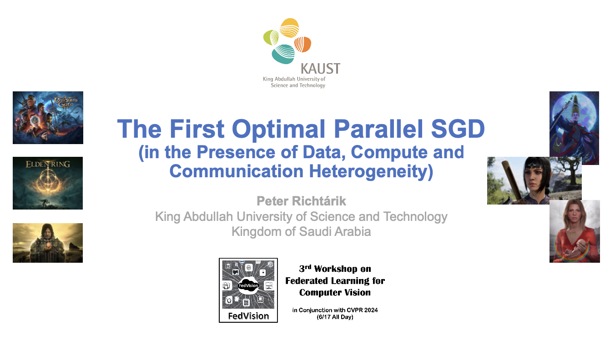
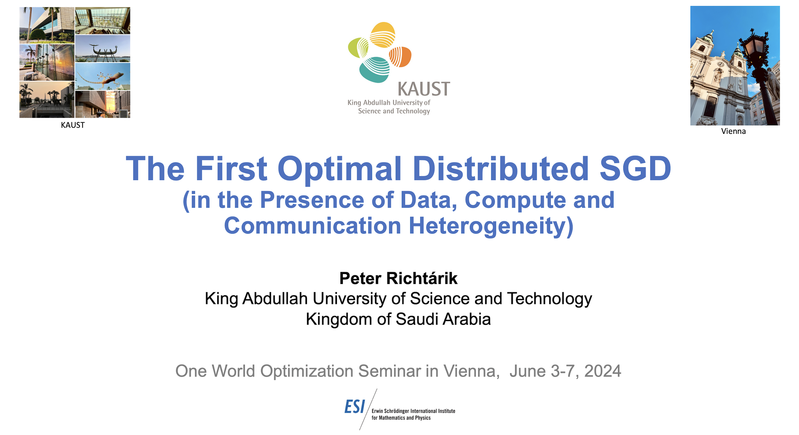
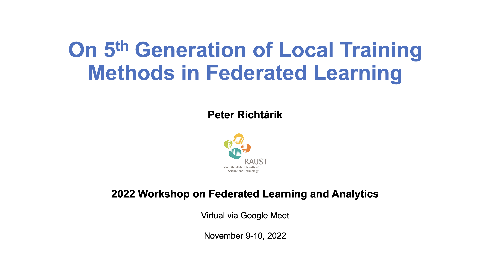

September 8, 2025
Talk @ HDA 2025
I am attending the 10th Workshop on High-Dimensional Approximation (HDA 2025), taking place during September 8-12 in Bonn, Germany. I am giving my keynote talk today.September 4, 2025
AMCS/STAT Graduate Seminar Talk
Today, I am giving a talk at the AMCS/STAT Graduate Seminar at KAUST: Location: Building 9, Level 2, Room 2325. The talk title is: "From the Ball-Proximal (Broximal) Point Method to Efficient Training of LLMs".August 31, 2025
New Paper
New paper out: "Convergence Analysis of the PAGE Stochastic Algorithm for Convex Finite-Sum Optimization" - joint work with Laurent Condat.Abstract: PAGE is a stochastic algorithm proposed by Li et al. [2021] to find a stationary point of an average of smooth nonconvex functions. We analyze PAGE in the convex setting and derive new convergence rates, leading to a better complexity than in the general nonconvex regime.
August 29, 2025
Fall 2025: Teaching 3 Courses & Leading the CS Graduate Seminar
I am back at KAUST. The Fall 2025 semester starts on Sunday, August 31. I am teaching three courses this semester: CS 331 (Stochastic Gradient Descent Methods), CS 332 (Federated Learning) and DSA ??? (Introduction to Machine Learning). In addition, I am leading CS 398 (CS Graduate Seminar).
August 20-27, 2025
ACM AsiaCCS 2025 in Vietnam
I am attending ACM AsiaCCS 2025, taking place in Hanoi, Vietnam. On August 26, I am giving the plenary talk at the International Workshop on Secure and Efficient Federated Learning. This was my first time in Vietnam!
August 5, 2025
New Paper
New paper out: "Bernoulli-LoRA: A Theoretical Framework for Randomized Low-Rank Adaptation" - joint work with Igor Sokolov, Abdurakhmon Sadiev, Yury Demidovich, and Fawaz S Al-Qahtani.Abstract: Parameter-efficient fine-tuning (PEFT) has emerged as a crucial approach for adapting large foundational models to specific tasks, particularly as model sizes continue to grow exponentially. Among PEFT methods, Low-Rank Adaptation (LoRA) (arXiv:2106.09685) stands out for its effectiveness and simplicity, expressing adaptations as a product of two low-rank matrices. While extensive empirical studies demonstrate LoRA's practical utility, theoretical understanding of such methods remains limited. Recent work on RAC-LoRA (arXiv:2410.08305) took initial steps toward rigorous analysis. In this work, we introduce Bernoulli-LoRA, a novel theoretical framework that unifies and extends existing LoRA approaches. Our method introduces a probabilistic Bernoulli mechanism for selecting which matrix to update. This approach encompasses and generalizes various existing update strategies while maintaining theoretical tractability. Under standard assumptions from non-convex optimization literature, we analyze several variants of our framework: Bernoulli-LoRA-GD, Bernoulli-LoRA-SGD, Bernoulli-LoRA-PAGE, Bernoulli-LoRA-MVR, Bernoulli-LoRA-QGD, Bernoulli-LoRA-MARINA, and Bernoulli-LoRA-EF21, establishing convergence guarantees for each variant. Additionally, we extend our analysis to convex non-smooth functions, providing convergence rates for both constant and adaptive (Polyak-type) stepsizes. Through extensive experiments on various tasks, we validate our theoretical findings and demonstrate the practical efficacy of our approach. This work is a step toward developing theoretically grounded yet practically effective PEFT methods.
July 27, 2025
Back at KAUST
I am back at KAUST for a week, after which I'll take a bit of vacation.
June 30, 2025
On my way to Senegal
I am on my way to Mbour, Senegal, where I will give several introductory lectures on Federated Learning at the Machine Learning Summer School (MLSS), organized by Adil Salim and Eugene Ndiaye.
June 25, 2025
Teaching at Saudi Aramco, Dhahran
I arrived to Dhahran. During June 26-29, I will be teaching "Introduction to Optimization" for a cohort of Saudi Aramco employees enrolled in the KAUST Master in Data Science program. My TAs are my PhD students Grigory Malinovsky and Igor Sokolov.
June 16, 2025
Talk at KiNiT
I am in Bratislava, giving a talk at the Kempelen Institute of Intelligent Technologies (KiNiT).
June 4, 2025
Vienna
I am in Vienna, attending the 3rd Vienna Workshop on Computational Optimization 2025 (VWCO25), taking place during June 4-7. I talked about two of our recent papers:

May 19, 2025
New Paper
New paper out: "Gluon: Making Muon & Scion Great Again! (Bridging Theory and Practice of LMO-based Optimizers for LLMs)" - joint work with Artem Riabinin, Egor Shulgin, and Kaja Gruntkowska.Abstract: Recent developments in deep learning optimization have brought about radically new algorithms based on the Linear Minimization Oracle (LMO) framework, such as ùñ¨ùóéùóàùóá and ùñ≤ùñºùóÇùóàùóá. After over a decade of ùñ†ùñΩùñ∫ùóÜ's dominance, these LMO-based methods are emerging as viable replacements, offering several practical advantages such as improved memory efficiency, better hyperparameter transferability, and most importantly, superior empirical performance on large-scale tasks, including LLM training. However, a significant gap remains between their practical use and our current theoretical understanding: prior analyses (1) overlook the layer-wise LMO application of these optimizers in practice, and (2) rely on an unrealistic smoothness assumption, leading to impractically small stepsizes. To address both, we propose a new LMO-based method called ùñ¶ùóÖùóéùóàùóá, capturing prior theoretically analyzed methods as special cases, and introduce a new refined generalized smoothness model that captures the layer-wise geometry of neural networks, matches the layer-wise practical implementation of ùñ¨ùóéùóàùóá and ùñ≤ùñºùóÇùóàùóá, and leads to convergence guarantees with strong practical predictive power. Unlike prior results, our theoretical stepsizes closely match the fine-tuned values reported by Pethick et al. (2025). Our experiments with NanoGPT and CNN confirm that our assumption holds along the optimization trajectory, ultimately closing the gap between theory and practice.
May 18, 2025
New Paper
New paper out: "The Stochastic Multi-Proximal Method for Nonsmooth Optimization" - joint work with Laurent Condat and Elnur Gasanov.Abstract: Stochastic gradient descent type methods are ubiquitous in machine learning, but they are only applicable to the optimization of differentiable functions. Proximal algorithms are more general and applicable to nonsmooth functions. We propose a new stochastic and variance-reduced algorithm, the Stochastic Multi-Proximal Method (SMPM), in which the proximity operators of a (possibly empty) random subset of functions are called at every iteration, according to an arbitrary sampling distribution. Several existing algorithms, including Point-SAGA (2016), Proxskip (2022) and RandProx-Minibatch (2023) are recovered as particular cases. We derive linear convergence results in presence of strong convexity and smoothness or similarity of the functions. We prove convergence in the general convex case and accelerated O(1/t^2) convergence with varying stepsizes in presence of strong convexity solely. Our results are new even for the above special cases. Moreover, we show an application to distributed optimization with compressed communication, outperforming existing methods.
May 13, 2025
Omar Shaikh Omar Defends his MS Thesis
My student Omar Shaikh Omar defended his MS thesis today. The thesis is based on the paper MindFlayer: Efficient Asynchronous Parallel SGD in the Presence of Heterogeneous and Random Worker Compute Times, recently accepted to the Uncertainty in AI (UAI) conference, to be held in July 2025 in Rio de Janeiro, Brazil. Congratulations!
May 8, 2025
Dr Burlachenko!
My PhD student Konstantin Burlachenko just defended his PhD thesis, entitled Optimization Methods and Software for Federated Learning. Here is Kostya's LinkedIn post about his defense. Konstantin will soon join ADIA. Congratulations, Dr Burlachenko!
May 3, 2025
AISTATS 2025 in Thailand
I am attending AISTATS 2025, taking place during May 3-5 in Phuket, Thailand.
April 24, 2025
ICLR 2025 @ Singapore
I have just arrived in Singapore to attend The Thirteenth International Conference on Learning Representations (ICLR 2025). We are presenting several papers at the conference and the workshops, including:
1) Laurent Condat, Arto Maranjyan, Peter Richtárik, LoCoDL: Communication-Efficient Distributed Learning with Local Training and Compression (spotlight)
2) Yury Demidovich, Petr Ostroukhov, Grigory Malinovsky, Samuel Horváth, Martin Takáč, Peter Richtárik, Eduard Gorbunov, Methods with Local Steps and Random Reshuffling for Generally Smooth Non-Convex Federated Optimization (poster)
3) Yury Demidovich, Grigory Malinovsky, Egor Shulgin, Peter Richtárik, MAST: Model-agnostic Sparsified Training (poster)
4) Eduard Gorbunov, Nazarii Tupitsa, Sayantan Choudhury, Alen Aliev, Peter Richtárik, Samuel Horváth, Martin Takáč, Methods for Convex $(L_0,L_1)$-Smooth Optimization: Clipping, Acceleration, and Adaptivity (poster)
5) Kai Yi, Peter Richtárik, Symmetric Pruning for Large Language Models (workshop)
May 8, 2025
Dr Yi!
My PhD student Kai Yi just defended his PhD thesis, entitled Strategies for Improving Communication Efficiency in Distributed and Federated Learning: Compression, Local Training, and Personalization. Kai is now heading to California to join Meta as a research scientist. Congratulations, Dr Yi!
April 9, 2025
SAC @ NeurIPS 2025
This year, I will be serving NeurIPS in the role of a Senior Area Chair (SAC).
April 9, 2025
Talk @ FLOW
I just gave a talk at the Federated Learning One World (FLOW) seminar. My talk had an unusually long title:
April 7-10, 2025
Rising Stars in AI Symposium @ KAUST
I am attending the Rising Stars in AI Symposium here at KAUST, organized by our KAUST Center if Excellence in Generative AI. I am giving a short talk at this event on April 9.April 6, 2025
New Paper
New paper out: "Thanos: A Block-wise Pruning Algorithm for Efficient Large Language Model Compression" - joint work with Ivan Ilin.Abstract: This paper presents Thanos, a novel weight-pruning algorithm designed to reduce the memory footprint and enhance the computational efficiency of large language models (LLMs) by removing redundant weights while maintaining accuracy. Thanos introduces a block-wise pruning strategy with adaptive masks that dynamically adjust to weight importance, enabling flexible sparsity patterns and structured formats, such as n:m sparsity, optimized for hardware acceleration. Experimental evaluations demonstrate that Thanos achieves state-of-the-art performance in structured pruning and outperforms existing methods in unstructured pruning. By providing an efficient and adaptable approach to model compression, Thanos offers a practical solution for deploying large models in resource-constrained environments.
March 30, 2025
Visiting Hong Kong
I am visiting Hong Kong this week on an invite by Defeng Sun.Tomorrow, I am giving a Distinguished Lecture in Applied Mathematics at The Hong Kong Polytechnic University.
March 21, 2025
New Paper
New paper out: "Collaborative Value Function Estimation Under Model Mismatch: A Federated Temporal Difference Analysis" - joint work with Ali Beikmohammadi, Sarit Khirirat, and Sindri Magnússon.Abstract: Federated reinforcement learning (FedRL) enables collaborative learning while preserving data privacy by preventing direct data exchange between agents. However, many existing FedRL algorithms assume that all agents operate in identical environments, which is often unrealistic. In real-world applications -- such as multi-robot teams, crowdsourced systems, and large-scale sensor networks -- each agent may experience slightly different transition dynamics, leading to inherent model mismatches. In this paper, we first establish linear convergence guarantees for single-agent temporal difference learning (TD(0)) in policy evaluation and demonstrate that under a perturbed environment, the agent suffers a systematic bias that prevents accurate estimation of the true value function. This result holds under both i.i.d. and Markovian sampling regimes. We then extend our analysis to the federated TD(0) (FedTD(0)) setting, where multiple agents -- each interacting with its own perturbed environment -- periodically share value estimates to collaboratively approximate the true value function of a common underlying model. Our theoretical results indicate the impact of model mismatch, network connectivity, and mixing behavior on the convergence of FedTD(0). Empirical experiments corroborate our theoretical gains, highlighting that even moderate levels of information sharing can significantly mitigate environment-specific errors.
March 19, 2025
New Paper
New paper out: "BurTorch: Revisiting Training from First Principles by Coupling Autodiff, Math Optimization, and Systems" - joint work with Konstantin Burlachenko.Abstract: In this work, we introduce BurTorch, a compact high-performance framework designed to optimize Deep Learning (DL) training on single-node workstations through an exceptionally efficient CPU-based backpropagation (Rumelhart et al., 1986; Linnainmaa, 1970) implementation. Although modern DL frameworks rely on compilerlike optimizations internally, BurTorch takes a different path. It adopts a minimalist design and demonstrates that, in these circumstances, classical compiled programming languages can play a significant role in DL research. By eliminating the overhead of large frameworks and making efficient implementation choices, BurTorch achieves orders-of-magnitude improvements in performance and memory efficiency when computing ∇f(x) on a CPU. BurTorch features a compact codebase designed to achieve two key goals simultaneously. First, it provides a user experience similar to script-based programming environments. Second, it dramatically minimizes runtime overheads. In large DL frameworks, the primary source of memory overhead for relatively small computation graphs f(x) is due to feature-heavy implementations. We benchmarked BurTorch against widely used DL frameworks in their execution modes: JAX (Bradbury et al., 2018), PyTorch (Paszke et al., 2019), TensorFlow (Abadi et al., 2016); and several standalone libraries: Autograd (Maclaurin et al., 2015), Micrograd (Karpathy, 2020), Apple MLX (Hannun et al., 2023). For small compute graphs, BurTorch outperforms best-practice solutions by up to ×2000 in runtime and reduces memory consumption by up to ×3500. For a miniaturized GPT-3 model (Brown et al., 2020), BurTorch achieves up to a ×20 speedup and reduces memory up to ×80 compared to PyTorch.
March 9, 2025
Mid-semester Break
It's mid-semester break at KAUST right now (March 9-10).February 19, 2025
New Paper
New paper out: "Smoothed Normalization for Efficient Distributed Private Optimization" - joint work with Egor Shulgin and Sarit Khirirat.Abstract: Federated learning enables training machine learning models while preserving the privacy of participants. Surprisingly, there is no differentially private distributed method for smooth, non-convex optimization problems. The reason is that standard privacy techniques require bounding the participants' contributions, usually enforced via clipping of the updates. Existing literature typically ignores the effect of clipping by assuming the boundedness of gradient norms or analyzes distributed algorithms with clipping but ignores DP constraints. In this work, we study an alternative approach via smoothed normalization of the updates motivated by its favorable performance in the single-node setting. By integrating smoothed normalization with an error-feedback mechanism, we design a new distributed algorithm Œ±-ùñ≠ùóàùóãùóÜùñ§ùñ¢. We prove that our method achieves a superior convergence rate over prior works. By extending Œ±-ùñ≠ùóàùóãùóÜùñ§ùñ¢ to the DP setting, we obtain the first differentially private distributed optimization algorithm with provable convergence guarantees. Finally, our empirical results from neural network training indicate robust convergence of Œ±-ùñ≠ùóàùóãùóÜùñ§ùñ¢ across different parameter settings.
February 17, 2025
New Paper
New paper out: "A Novel Unified Parametric Assumption for Nonconvex Optimization" - joint work with Artem Riabinin and Ahmed Khaled.Abstract: Nonconvex optimization is central to modern machine learning, but the general framework of nonconvex optimization yields weak convergence guarantees that are too pessimistic compared to practice. On the other hand, while convexity enables efficient optimization, it is of limited applicability to many practical problems. To bridge this gap and better understand the practical success of optimization algorithms in nonconvex settings, we introduce a novel unified parametric assumption. Our assumption is general enough to encompass a broad class of nonconvex functions while also being specific enough to enable the derivation of a unified convergence theorem for gradient-based methods. Notably, by tuning the parameters of our assumption, we demonstrate its versatility in recovering several existing function classes as special cases and in identifying functions amenable to efficient optimization. We derive our convergence theorem for both deterministic and stochastic optimization, and conduct experiments to verify that our assumption can hold practically over optimization trajectories.
February 17, 2025
New Paper
New paper out: "Double Momentum and Error Feedback for Clipping with Fast Rates and Differential Privacy" - joint work with Rustem Islamov, Samuel Horváth, Aurelien Lucchi, and Eduard Gorbunov.Abstract: Strong Differential Privacy (DP) and Optimization guarantees are two desirable properties for a method in Federated Learning (FL). However, existing algorithms do not achieve both properties at once: they either have optimal DP guarantees but rely on restrictive assumptions such as bounded gradients/bounded data heterogeneity, or they ensure strong optimization performance but lack DP guarantees. To address this gap in the literature, we propose and analyze a new method called Clip21-SGD2M based on a novel combination of clipping, heavy-ball momentum, and Error Feedback. In particular, for non-convex smooth distributed problems with clients having arbitrarily heterogeneous data, we prove that Clip21-SGD2M has optimal convergence rate and also near optimal (local-)DP neighborhood. Our numerical experiments on non-convex logistic regression and training of neural networks highlight the superiority of Clip21-SGD2M over baselines in terms of the optimization performance for a given DP-budget.
February 5, 2025
New Paper
New paper out: "Revisiting Stochastic Proximal Point Methods: Generalized Smoothness and Similarity" - joint work with Zhirayr Tovmasyan, Grigory Malinovsky, and Laurent Condat.Abstract: The growing prevalence of nonsmooth optimization problems in machine learning has spurred significant interest in generalized smoothness assumptions. Among these, the (L0,L1)-smoothness assumption has emerged as one of the most prominent. While proximal methods are well-suited and effective for nonsmooth problems in deterministic settings, their stochastic counterparts remain underexplored. This work focuses on the stochastic proximal point method (SPPM), valued for its stability and minimal hyperparameter tuning -- advantages often missing in stochastic gradient descent (SGD). We propose a novel phi-smoothness framework and provide a comprehensive analysis of SPPM without relying on traditional smoothness assumptions. Our results are highly general, encompassing existing findings as special cases. Furthermore, we examine SPPM under the widely adopted expected similarity assumption, thereby extending its applicability to a broader range of scenarios. Our theoretical contributions are illustrated and validated by practical experiments.
February 4, 2025
New Paper
New paper out: "The Ball-Proximal (="Broximal") Point Method: a New Algorithm, Convergence Theory, and Applications" - joint work with Kaja Gruntkowska, Hanmin Li, and Aadi Rane.Abstract: Non-smooth and non-convex global optimization poses significant challenges across various applications, where standard gradient-based methods often struggle. We propose the Ball-Proximal Point Method, Broximal Point Method, or Ball Point Method (BPM) for short - a novel algorithmic framework inspired by the classical Proximal Point Method (PPM) (Rockafellar, 1976), which, as we show, sheds new light on several foundational optimization paradigms and phenomena, including non-convex and non-smooth optimization, acceleration, smoothing, adaptive stepsize selection, and trust-region methods. At the core of BPM lies the ball-proximal ("broximal") operator, which arises from the classical proximal operator by replacing the quadratic distance penalty by a ball constraint. Surprisingly, and in sharp contrast with the sublinear rate of PPM in the nonsmooth convex regime, we prove that BPM converges linearly and in a finite number of steps in the same regime. Furthermore, by introducing the concept of ball-convexity, we prove that BPM retains the same global convergence guarantees under weaker assumptions, making it a powerful tool for a broader class of potentially non-convex optimization problems. Just like PPM plays the role of a conceptual method inspiring the development of practically efficient algorithms and algorithmic elements, e.g., gradient descent, adaptive step sizes, acceleration (Ahn & Sra, 2020), and "W" in AdamW (Zhuang et al., 2022), we believe that BPM should be understood in the same manner: as a blueprint and inspiration for further development.
February 2, 2025
New Paper
New paper out: "ATA: Adaptive Task Allocation for Efficient Resource Management in Distributed Machine Learning" - joint work with Artavazd Maranjyan, El Mehdi Saad, and Francesco Orabona.Abstract: Asynchronous methods are fundamental for parallelizing computations in distributed machine learning. They aim to accelerate training by fully utilizing all available resources. However, their greedy approach can lead to inefficiencies using more computation than required, especially when computation times vary across devices. If the computation times were known in advance, training could be fast and resource-efficient by assigning more tasks to faster workers. The challenge lies in achieving this optimal allocation without prior knowledge of the computation time distributions. In this paper, we propose ATA (Adaptive Task Allocation), a method that adapts to heterogeneous and random distributions of worker computation times. Through rigorous theoretical analysis, we show that ATA identifies the optimal task allocation and performs comparably to methods with prior knowledge of computation times. Experimental results further demonstrate that ATA is resource-efficient, significantly reducing costs compared to the greedy approach, which can be arbitrarily expensive depending on the number of workers.
January 31, 2025
New Paper
New paper out: "Symmetric Pruning of Large Language Models" - joint work with Kai Yi.Abstract: Popular post-training pruning methods such as Wanda and RIA are known for their simple, yet effective, designs that have shown exceptional empirical performance. Wanda optimizes performance through calibrated activations during pruning, while RIA emphasizes the relative, rather than absolute, importance of weight elements. Despite their practical success, a thorough theoretical foundation explaining these outcomes has been lacking. This paper introduces new theoretical insights that redefine the standard minimization objective for pruning, offering a deeper understanding of the factors contributing to their success. Our study extends beyond these insights by proposing complementary strategies that consider both input activations and weight significance. We validate these approaches through rigorous experiments, demonstrating substantial enhancements over existing methods. Furthermore, we introduce a novel training-free fine-tuning approach R^2-DSnoT that incorporates relative weight importance and a regularized decision boundary within a dynamic pruning-and-growing framework, significantly outperforming strong baselines and establishing a new state of the art.
January 28, 2025
New Paper
New paper out: "Ringmaster ASGD: The First Asynchronous SGD with Optimal Time Complexity" - joint work with Artavazd Maranjyan and Alexander Tyurin.Abstract: Asynchronous Stochastic Gradient Descent (Asynchronous SGD) is a cornerstone method for parallelizing learning in distributed machine learning. However, its performance suffers under arbitrarily heterogeneous computation times across workers, leading to suboptimal time complexity and inefficiency as the number of workers scales. While several Asynchronous SGD variants have been proposed, recent findings by Tyurin & Richtárik (NeurIPS 2023) reveal that none achieve optimal time complexity, leaving a significant gap in the literature. In this paper, we propose Ringmaster ASGD, a novel Asynchronous SGD method designed to address these limitations and tame the inherent challenges of Asynchronous SGD. We establish, through rigorous theoretical analysis, that Ringmaster ASGD achieves optimal time complexity under arbitrarily heterogeneous and dynamically fluctuating worker computation times. This makes it the first Asynchronous SGD method to meet the theoretical lower bounds for time complexity in such scenarios.
January 26, 2025
Spring semester starting
The Spring semester is starting at KAUST today; I am teaching my CS 331 course (Stochastic Gradient Descent Methods) every Sunday, during 14:30-17:20 in Bldg 9, Room 3221.January 7, 2025
Talk at KiNiT
Today at 10:30am Bratislava time, I am giving a research seminar talk at the Kempelen Institute of Intelligent Technologies (KiNiT). Talk title: "Is Going Asynchronous the Right Way of Handling Device Heterogeneity in Federated Learning? (The First Optimal Parallel SGD in the Presence of Data, Compute and Communication Heterogeneity)".December 27, 2024
New Paper
New paper out: "On the Convergence of DP-SGD with Adaptive Clipping" - joint work with Egor Shulgin.Abstract: Stochastic Gradient Descent (SGD) with gradient clipping is a powerful technique for enabling differentially private optimization. Although prior works extensively investigated clipping with a constant threshold, private training remains highly sensitive to threshold selection, which can be expensive or even infeasible to tune. This sensitivity motivates the development of adaptive approaches, such as quantile clipping, which have demonstrated empirical success but lack a solid theoretical understanding. This paper provides the first comprehensive convergence analysis of SGD with quantile clipping (QC-SGD). We demonstrate that QC-SGD suffers from a bias problem similar to constant-threshold clipped SGD but show how this can be mitigated through a carefully designed quantile and step size schedule. Our analysis reveals crucial relationships between quantile selection, step size, and convergence behavior, providing practical guidelines for parameter selection. We extend these results to differentially private optimization, establishing the first theoretical guarantees for DP-QC-SGD. Our findings provide theoretical foundations for widely used adaptive clipping heuristic and highlight open avenues for future research.
December 22, 2024
New Paper
New paper out: "MARINA-P: Superior Performance in Non-smooth Federated Optimization with Adaptive Stepsizes" - joint work with Igor Sokolov.Abstract: Non-smooth communication-efficient federated optimization is crucial for many machine learning applications, yet remains largely unexplored theoretically. Recent advancements have primarily focused on smooth convex and non-convex regimes, leaving a significant gap in understanding the non-smooth convex setting. Additionally, existing literature often overlooks efficient server-to-worker communication (downlink), focusing primarily on worker-to-server communication (uplink). We consider a setup where uplink costs are negligible and focus on optimizing downlink communication by improving state-of-the-art schemes like EF21-P (arXiv:2209.15218) and MARINA-P (arXiv:2402.06412) in the non-smooth convex setting. We extend the non-smooth convex theory of EF21-P [Anonymous, 2024], originally developed for single-node scenarios, to the distributed setting, and extend MARINA-P to the non-smooth convex setting. For both algorithms, we prove an optimal O(1/T^{1/2}) convergence rate and establish communication complexity bounds matching classical subgradient methods. We provide theoretical guarantees under constant, decreasing, and adaptive (Polyak-type) stepsizes. Our experiments demonstrate that MARINA-P with correlated compressors outperforms other methods in both smooth non-convex and non-smooth convex settings. This work presents the first theoretical results for distributed non-smooth optimization with server-to-worker compression, along with comprehensive analysis for various stepsize schemes.
December 22, 2024
New Paper
New paper out: "Differentially Private Random Block Coordinate Descent" - joint work with Artavazd Maranjyan and Abdurakhmon Sadiev.Abstract: Coordinate Descent (CD) methods have gained significant attention in machine learning due to their effectiveness in solving high-dimensional problems and their ability to decompose complex optimization tasks. However, classical CD methods were neither designed nor analyzed with data privacy in mind, a critical concern when handling sensitive information. This has led to the development of differentially private CD methods, such as DP-CD (Differentially Private Coordinate Descent) proposed by Mangold et al (ICML 2022), yet a disparity remains between non-private CD and DP-CD methods. In our work, we propose a differentially private random block coordinate descent method that selects multiple coordinates with varying probabilities in each iteration using sketch matrices. Our algorithm generalizes both DP-CD and the classical DP-SGD (Differentially Private Stochastic Gradient Descent), while preserving the same utility guarantees. Furthermore, we demonstrate that better utility can be achieved through importance sampling, as our method takes advantage of the heterogeneity in coordinate-wise smoothness constants, leading to improved convergence rates.
December 19, 2024
New Paper
New paper out: "Speeding up Stochastic Proximal Optimization in the High Hessian Dissimilarity Setting" - joint work with Elnur Gasanov.Abstract: Stochastic proximal point methods have recently garnered renewed attention within the optimization community, primarily due to their desirable theoretical properties. Notably, these methods exhibit a convergence rate that is independent of the Lipschitz smoothness constants of the loss function, a feature often missing in the loss functions of modern ML applications. In this paper, we revisit the analysis of the Loopless Stochastic Variance Reduced Proximal Point Method (L-SVRP). Building on existing work, we establish a theoretical improvement in the convergence rate in scenarios characterized by high Hessian dissimilarity among the functions. Our concise analysis, which does not require smoothness assumptions, demonstrates a significant improvement in communication complexity compared to standard stochastic gradient descent.
December 13, 2024
Attending KAUST Commencement
I am attending the Commencement at KAUST. My MS student Ivan Ilin got his MS degree!December 3, 2024
New Paper
New paper out: "Methods with Local Steps and Random Reshuffling for Generally Smooth Non-Convex Federated Optimization" - joint work with Yury Demidovich, Petr Ostroukhov, Grigory Malinovsky, Samuel Horváth, Martin Takáč, and Eduard Gorbunov.Abstract: Non-convex Machine Learning problems typically do not adhere to the standard smoothness assumption. Based on empirical findings, Zhang et al. (2020b) proposed a more realistic generalized $(L_0, L_1)$-smoothness assumption, though it remains largely unexplored. Many existing algorithms designed for standard smooth problems need to be revised. However, in the context of Federated Learning, only a few works address this problem but rely on additional limiting assumptions. In this paper, we address this gap in the literature: we propose and analyze new methods with local steps, partial participation of clients, and Random Reshuffling without extra restrictive assumptions beyond generalized smoothness. The proposed methods are based on the proper interplay between clients' and server's stepsizes and gradient clipping. Furthermore, we perform the first analysis of these methods under the Polyak-Łojasiewicz condition. Our theory is consistent with the known results for standard smooth problems, and our experimental results support the theoretical insights.
November 26, 2024
New Paper
New paper out: "Pushing the Limits of Large Language Model Quantization via the Linearity Theorem" - joint work with Vladimir Malinovskii, Andrei Panferov, Ivan Ilin, Han Guo, and Dan Alistarh.Abstract: Quantizing large language models has become a standard way to reduce their memory and computational costs. Typically, existing methods focus on breaking down the problem into individual layer-wise sub-problems, and minimizing per-layer error, measured via various metrics. Yet, this approach currently lacks theoretical justification and the metrics employed may be sub-optimal. In this paper, we present a "linearity theorem" establishing a direct relationship between the layer-wise L2 reconstruction error and the model perplexity increase due to quantization. This insight enables two novel applications: (1) a simple data-free LLM quantization method using Hadamard rotations and MSE-optimal grids, dubbed HIGGS, which outperforms all prior data-free approaches such as the extremely popular NF4 quantized format, and (2) an optimal solution to the problem of finding non-uniform per-layer quantization levels which match a given compression constraint in the medium bitwidth regime, obtained by reduction to dynamic programming. On the practical side, we demonstrate improved accuracy-compression trade-offs on Llama-3.1 and 3.2-family models, as well as on Qwen family models. Further, we show that our method can be efficiently supported in terms of GPU kernels at various batch sizes, advancing both data-free and non-uniform quantization for LLMs.
November 15, 2024
Visiting China
On my way to China -- will be there for two weeks, until November 29, 2024. I am giving a series of five lectures on Optimization for Machine Learning at the Beijing Institute for Mathematical Sciences and Applications (BIMSA), and three seminar talks, at Tsinghua Univeristy, Shanghai Institute for Mathematics and Interdisciplinary Sciences (SIMIS), and Peking University. Once I arrived, I was invited to visit various other places, including Microsoft Research Asia, Nanjing University, Fudan University, Tongji University and Zhejiang University. However, my program was already too full for me to be able to accommodate these invites. Hopefully, next time!October 22, 2024
New Paper
New paper out: "Error Feedback under $(L_0,L_1)$-Smoothness: Normalization and Momentum " - joint work with Sarit Khirirat, Abdurakhmon Sadiev, Artem Riabinin, and Eduard Gorbunov.Abstract: We provide the first proof of convergence for normalized error feedback algorithms across a wide range of machine learning problems. Despite their popularity and efficiency in training deep neural networks, traditional analyses of error feedback algorithms rely on the smoothness assumption that does not capture the properties of objective functions in these problems. Rather, these problems have recently been shown to satisfy generalized smoothness assumptions, and the theoretical understanding of error feedback algorithms under these assumptions remains largely unexplored. Moreover, to the best of our knowledge, all existing analyses under generalized smoothness either i) focus on single-node settings or ii) make unrealistically strong assumptions for distributed settings, such as requiring data heterogeneity, and almost surely bounded stochastic gradient noise variance. In this paper, we propose distributed error feedback algorithms that utilize normalization to achieve the O(1/√K) convergence rate for nonconvex problems under generalized smoothness. Our analyses apply for distributed settings without data heterogeneity conditions, and enable stepsize tuning that is independent of problem parameters. Additionally, we provide strong convergence guarantees of normalized error feedback algorithms for stochastic settings. Finally, we show that due to their larger allowable stepsizes, our new normalized error feedback algorithms outperform their non-normalized counterparts on various tasks, including the minimization of polynomial functions, logistic regression, and ResNet-20 training.
October 20, 2024
New Paper
New paper out: "Tighter Performance Theory of FedExProx" - joint work with Wojciech Anyszka, Kaja Gruntkowska, and Alexander Tyurin.Abstract: We revisit FedExProx - a recently proposed distributed optimization method designed to enhance convergence properties of parallel proximal algorithms via extrapolation. In the process, we uncover a surprising flaw: its known theoretical guarantees on quadratic optimization tasks are no better than those offered by the vanilla Gradient Descent (GD) method. Motivated by this observation, we develop a novel analysis framework, establishing a tighter linear convergence rate for non-strongly convex quadratic problems. By incorporating both computation and communication costs, we demonstrate that FedExProx can indeed provably outperform GD, in stark contrast to the original analysis. Furthermore, we consider partial participation scenarios and analyze two adaptive extrapolation strategies - based on gradient diversity and Polyak stepsizes - again significantly outperforming previous results. Moving beyond quadratics, we extend the applicability of our analysis to general functions satisfying the Polyak-Lojasiewicz condition, outperforming the previous strongly convex analysis while operating under weaker assumptions. Backed by empirical results, our findings point to a new and stronger potential of FedExProx, paving the way for further exploration of the benefits of extrapolation in federated learning.
October 11, 2024
New Paper
New paper out: "Unlocking FedNL: Self-Contained Compute-Optimized Implementation" - joint work with Konstantin Burlachenko.Abstract: Federated Learning (FL) is an emerging paradigm that enables intelligent agents to collaboratively train Machine Learning (ML) models in a distributed manner, eliminating the need for sharing their local data. The recent work (arXiv:2106.02969) introduces a family of Federated Newton Learn (FedNL) algorithms, marking a significant step towards applying second-order methods to FL and large-scale optimization. However, the reference FedNL prototype exhibits three serious practical drawbacks: (i) It requires 4.8 hours to launch a single experiment in a sever-grade workstation; (ii) The prototype only simulates multi-node setting; (iii) Prototype integration into resource-constrained applications is challenging. To bridge the gap between theory and practice, we present a self-contained implementation of FedNL, FedNL-LS, FedNL-PP for single-node and multi-node settings. Our work resolves the aforementioned issues and reduces the wall clock time by x1000. With this FedNL outperforms alternatives for training logistic regression in a single-node -- CVXPY (arXiv:1603.00943), and in a multi-node -- Apache Spark (arXiv:1505.06807), Ray/Scikit-Learn (arXiv:1712.05889). Finally, we propose two practical-orientated compressors for FedNL - adaptive TopLEK and cache-aware RandSeqK, which fulfill the theory of FedNL.
October 10, 2024
New Paper
New paper out: "Randomized Asymmetric Chain of LoRA: The First Meaningful Theoretical Framework for Low-Rank Adaptation" - joint work with Grigory Malinovsky, Umberto Michieli, Hasan Abed Al Kader Hammoud, Taha Ceritli, Hayder Elesedy, and Mete Ozay.Abstract: Fine-tuning has become a popular approach to adapting large foundational models to specific tasks. As the size of models and datasets grows, parameter-efficient fine-tuning techniques are increasingly important. One of the most widely used methods is Low-Rank Adaptation (LoRA), with adaptation update expressed as the product of two low-rank matrices. While LoRA was shown to possess strong performance in fine-tuning, it often under-performs when compared to full-parameter fine-tuning (FPFT). Although many variants of LoRA have been extensively studied empirically, their theoretical optimization analysis is heavily under-explored. The starting point of our work is a demonstration that LoRA and its two extensions, Asymmetric LoRA and Chain of LoRA, indeed encounter convergence issues. To address these issues, we propose Randomized Asymmetric Chain of LoRA (RAC-LoRA) -- a general optimization framework that rigorously analyzes the convergence rates of LoRA-based methods. Our approach inherits the empirical benefits of LoRA-style heuristics, but introduces several small but important algorithmic modifications which turn it into a provably convergent method. Our framework serves as a bridge between FPFT and low-rank adaptation. We provide provable guarantees of convergence to the same solution as FPFT, along with the rate of convergence. Additionally, we present a convergence analysis for smooth, non-convex loss functions, covering gradient descent, stochastic gradient descent, and federated learning settings. Our theoretical findings are supported by experimental results.
October 9, 2024
Papers Accepted to NeurIPS 2024
We've had several papers accepted to the 38th Annual Conference on Neural Information Processing Systems (NeurIPS 2024), which will run during December 10--15, 2024 in Vancouver, Canada.
Conference papers:
1) "PV-Tuning: Beyond Straight-Through Estimation for Extreme LLM Compression"
[arXiv]
by Vladimir Malinovskii, Denis Mazur, Ivan Ilin, Denis Kuznedelev, Konstantin Burlachenko, Kai Yi, Dan Alistarh, and Peter Richtárik
Oral (0.4% acceptance rate)
2) "Improving the Worst-Case Bidirectional Communication Complexity for Nonconvex Distributed Optimization under Function Similarity"
[arXiv]
by Kaja Gruntkowska, Alexander Tyurin, and Peter Richtárik
Spotlight
3) "On the Optimal Time Complexities in Decentralized Stochastic Asynchronous Optimization"
[arXiv]
by Alexander Tyurin and Peter Richtárik
Poster
4) "Shadowheart SGD: Distributed Asynchronous SGD with Optimal Time Complexity Under Arbitrary Computation and Communication Heterogeneity"
[arXiv]
by Alexander Tyurin, Marta Pozzi, Ivan Ilin, and Peter Richtárik
Poster
5) "MicroAdam: Accurate Adaptive Optimization with Low Space Overhead and Provable Convergence"
[arXiv]
by Ionut-Vlad Modoranu, Mher Safaryan, Grigory Malinovsky, Eldar Kurtic, Thomas Robert, Peter Richtárik, and Dan Alistarh
Poster
6) "Freya PAGE: First Optimal Time Complexity for Large-Scale Nonconvex Finite-Sum Optimization with Heterogeneous Asynchronous Computations"
[arXiv]
by Alexander Tyurin, Kaja Gruntkowska, and Peter Richtárik
Poster
7) "Don't Compress Gradients in Random Reshuffling: Compress Gradient Differences"
[arXiv]
by Abdurakhmon Sadiev, Grigory Malinovsky, Eduard Gorbunov, Igor Sokolov, Ahmed Khaled, Konstantin Burlachenko, and Peter Richtárik
Poster
8) "The Power of Extrapolation in Federated Learning"
[arXiv]
by Hanmin Li, Kirill Acharya, and Peter Richtárik
Poster
9) "Byzantine Robustness and Partial Participation Can Be Achieved at Once: Just Clip Gradient Differences"
[arXiv]
by Grigory Malinovsky, Peter Richtárik, Samuel Horváth, and Eduard Gorbunov
Poster
Workshop papers:
10) "Cohort Squeeze: Beyond a Single Communication Round per Cohort in Cross-Device Federated Learning"
[arXiv]
by Kai Yi, Timur Kharisov, Igor Sokolov, and Peter Richtárik
FL Workshop Oral
11) "SPAM: Stochastic Proximal Point Method with Momentum Variance Reduction for Nonconvex Cross-Device Federated Learning"
[arXiv]
by Avetik Karagulyan, Egor Shulgin, Abdurakhmon Sadiev, and Peter Richtárik
NeurIPS 2024 Workshop: Optimization for Machine Learning (OPT 2024)
12) "Communication-Efficient Algorithms Under Generalized Smoothness Assumptions"
[arXiv]
by Sarit Khirirat, Abdurakhmon Sadiev, Artem Riabinin, Eduard Gorbunov, and Peter Richtárik
NeurIPS 2024 Workshop: Optimization for Machine Learning (OPT 2024)
13) "LoCoDL: Communication-Efficient Distributed Learning with Local Training and Compression"
[arXiv]
by Laurent Condat, Artavazd Maranjyan, and Peter Richtárik
NeurIPS 2024 Workshop: Optimization for Machine Learning (OPT 2024)
14) "MindFlayer: Efficient Asynchronous Parallel SGD in the Presence of Heterogeneous and Random Worker Compute Times"
[arXiv]
by Artavazd Maranjyan, Omar Shaikh Omar, and Peter Richtárik
NeurIPS 2024 Workshop: Optimization for Machine Learning (OPT 2024)
15) "Differentially Private Random Block Coordinate Descent"
[arXiv]
by Arto Maranjyan, Abdurakhmon Sadiev, and Peter Richtárik
NeurIPS 2024 Workshop: Optimization for Machine Learning (OPT 2024)
16) "Local Curvature Descent: Squeezing More Curvature out of Standard and Polyak Gradient Descent"
[arXiv]
by Peter Richtárik, Simone Maria Giancola, Dymitr Lubczyk, and Robin Yadav
NeurIPS 2024 Workshop: Optimization for Machine Learning (OPT 2024)
17) "On the Convergence of FedProx with Extrapolation and Inexact Prox"
[arXiv]
by Hanmin Li and Peter Richtárik
NeurIPS 2024 Workshop: Optimization for Machine Learning (OPT 2024)
18) "Stochastic Proximal Point Methods for Monotone Inclusions under Expected Similarity"
[arXiv]
by Abdurakhmon Sadiev, Laurent Condat, and Peter Richtárik
NeurIPS 2024 Workshop: Optimization for Machine Learning (OPT 2024)
19) "On Convergence of SGD with Adaptive Clipping"
[arXiv]
by Egor Shulgin and Peter Richtárik
NeurIPS 2024 Workshop: Optimization for Machine Learning (OPT 2024)
October 2, 2024
New Paper
New paper out: "On the Convergence of FedProx with Extrapolation and Inexact Prox" - joint work with Hanmin Li.Abstract: Enhancing the FedProx federated learning algorithm (Li et al., 2020) with server-side extrapolation, Li et al. (2024a) recently introduced the FedExProx method. Their theoretical analysis, however, relies on the assumption that each client computes a certain proximal operator exactly, which is impractical since this is virtually never possible to do in real settings. In this paper, we investigate the behavior of FedExProx without this exactness assumption in the smooth and globally strongly convex setting. We establish a general convergence result, showing that inexactness leads to convergence to a neighborhood of the solution. Additionally, we demonstrate that, with careful control, the adverse effects of this inexactness can be mitigated. By linking inexactness to biased compression (Beznosikov et al., 2023), we refine our analysis, highlighting robustness of extrapolation to inexact proximal updates. We also examine the local iteration complexity required by each client to achieved the required level of inexactness using various local optimizers. Our theoretical insights are validated through comprehensive numerical experiments.
September 25, 2024
Charles Broyden Prize
Just learned that together with Albert S. Berahas, Majid Jahani and Martin Takáč we've won the Charles Broyden Prize for the paper "Quasi-Newton methods for deep learning: forget the past, just sample". Unexpected; thanks!

September 24, 2024
New Paper
New paper out: "Methods for Convex $(L_0,L_1)$-Smooth Optimization: Clipping, Acceleration, and Adaptivity" - joint work with Eduard Gorbunov, Nazarii Tupitsa, Sayantan Choudhury, Alen Aliev, Samuel Horváth, and Martin Takáč.Abstract: Due to the non-smoothness of optimization problems in Machine Learning, generalized smoothness assumptions have been gaining a lot of attention in recent years. One of the most popular assumptions of this type is $(L_0,L_1)$-smoothness (Zhang et al., 2020). In this paper, we focus on the class of (strongly) convex $(L_0,L_1)$-smooth functions and derive new convergence guarantees for several existing methods. In particular, we derive improved convergence rates for Gradient Descent with (Smoothed) Gradient Clipping and for Gradient Descent with Polyak Stepsizes. In contrast to the existing results, our rates do not rely on the standard smoothness assumption and do not suffer from the exponential dependency from the initial distance to the solution. We also extend these results to the stochastic case under the over-parameterization assumption, propose a new accelerated method for convex $(L_0,L_1)$-smooth optimization, and derive new convergence rates for Adaptive Gradient Descent (Malitsky and Mishchenko, 2020).
September 18, 2024
FTLA 2024 @ Valencia
Today I am giving a keynote talk at the FTLA conference held during September 17-19, 2024, in Valencia, Spain [FTLA 2024 = The 2nd IEEE International Conference on Federated Learning Technologies and Applications].September 4, 2024
AMCS/STAT Graduate Seminar Talk
Tomorrow (Sept 5) at noon I am giving a talk at the AMCS/STAT Graduate Seminar here at KAUST: Location: Building 9, Level 2, Room 2325. The talk title is: "The First Optimal Parallel SGD (in the Presence of Data, Compute and Communication Heterogeneity)". This is the same talk as the one I gave two days ago here at KAUST to CS audience, but this time around the audience is composed of mathematics and statistics people.September 2, 2024
CS Graduate Seminar Talk
Today at noon I am giving a talk at the Computer Science Graduate Seminar here at KAUST. Location: Building 9, Level 2, Room 2325. The talk title is: "The First Optimal Parallel SGD (in the Presence of Data, Compute and Communication Heterogeneity)".August 26, 2024
Celebrating Nesterov's 50 Years of Research
I am on my way to Belgium to attend the ALGOPT2024 workshop on Algorithmic Optimization: Tools for AI and Data Science, held at UCLouvain during August 27-30, 2024. The conference is a celebration of Yurii Nesterov's 50 years anniversary of doing research in optimization. I am giving my talk on the first day of the event. It will be super nice to reconnect with many friends and colleagues.July 21, 2024
ICML 2024 in Vienna
During July 21-27, I am attending the ICML 2024 conference held in Vienna.June 17, 2024
A keynote talk: FedVision @ CVPR 2024
I am giving a keynote talk at the Federated Learning for Computer Vision (FedVision) Workshop at CVPR 2024 today. The conference is held in Seattle, during June 17--21.
Here is the presentation (62 slides) supporting my talk. This is the third time I am giving this talk, each time expanded a bit (40 -> 52 -> 62 slides).
June 10, 2024
Talk in Paris
I am attending the Applied Algorithms for Machine Learning (a workshop on the future of computation), held during June 10-12 in Paris. The event is organized by some amazing folks from Rice University: Maryam Aliakbarpour, Vladimir Braverman, Ben (Xia) Hu, Nai-Hui Chia, Anastasios Kyrillidis, Sebastian Perez-Salazar, Anshumali Shrivastava, Arlei Silva and Cesar Uribe. It turn out that Rice happens to have a physical presence in the heart of Paris (Club de la Chasse).
Here are the 52 slides from my talk.
June 6, 2024
Talk in Vienna (update)
I have given my talk at the One World Optimization Seminar (Workshop), held at the Erwin Schrödinger International Institute for Mathematics and Physics in Vienna. The event is organized by Radu Ioan Boţ and Yura Malitsky.
Here are the 40 slides forming my talk. A recording of the talk is also on YouTube now.
June 3, 2024
New Paper
New paper out: "Cohort Squeeze: Beyond a Single Communication Round per Cohort in Cross-Device Federated Learning" - joint work with Kai Yi, Timur Kharisov, Igor Sokolov, and Peter Richtárik.Abstract: Virtually all federated learning (FL) methods, including FedAvg, operate in the following manner: i) an orchestrating server sends the current model parameters to a cohort of clients selected via certain rule, ii) these clients then independently perform a local training procedure (e.g., via SGD or Adam) using their own training data, and iii) the resulting models are shipped to the server for aggregation. This process is repeated until a model of suitable quality is found. A notable feature of these methods is that each cohort is involved in a single communication round with the server only. In this work we challenge this algorithmic design primitive and investigate whether it is possible to ``squeeze more juice" out of each cohort than what is possible in a single communication round. Surprisingly, we find that this is indeed the case, and our approach leads to up to 74 percent reduction in the total communication cost needed to train a FL model in the cross-device setting. Our method is based on a novel variant of the stochastic proximal point method (SPPM-AS) which supports a large collection of client sampling procedures some of which lead to further gains when compared to classical client selection approaches.
June 2, 2024
Papers Accepted to ICML 2024
We've had two papers accepted to The 41st International Conference on Machine Learning (ICML 2024):
Eduard Gorbunov, Abdurakhmon Sadiev, Marina Danilova, Samuel Horváth, Gauthier Gidel, Pavel Dvurechensky, Alexander Gasnikov, and Peter Richtárik
High-probability convergence for composite and distributed stochastic minimization and variational inequalities with heavy-tailed noise
ORAL PAPER
[arXiv]
Egor Shulgin and Peter Richtárik
Towards a better theoretical understanding of independent subnetwork training
[arXiv]
The conference will take place during July 21-27 in Vienna, Austria.
June 1, 2024
Talk in Vienna
I am on my way to Vienna, to attend the One World Optimization Seminar, held at the Erwin Schrödinger International Institute for Mathematics and Physics. The event is organized by Radu Ioan Boţ and Yura Malitsky. The event has an excellent lineup of speakers; see the schedule here.My talk is scheduled for Thursday (June 6).
May 31, 2024
New Paper
New paper out: "Prune at the Clients, Not the Server: Accelerated Sparse Training in Federated Learning" - joint work with Georg Meinhardt, Kai Yi, and Laurent Condat.Abstract: In the recent paradigm of Federated Learning (FL), multiple clients train a shared model while keeping their local data private. Resource constraints of clients and communication costs pose major problems for training large models in FL. On the one hand, addressing the resource limitations of the clients, sparse training has proven to be a powerful tool in the centralized setting. On the other hand, communication costs in FL can be addressed by local training, where each client takes multiple gradient steps on its local data. Recent work has shown that local training can provably achieve the optimal accelerated communication complexity [Mishchenko et al., 2022]. Hence, one would like an accelerated sparse training algorithm. In this work we show that naive integration of sparse training and acceleration at the server fails, and how to fix it by letting the clients perform these tasks appropriately. We introduce Sparse-ProxSkip, our method developed for the nonconvex setting, inspired by RandProx [Condat and Richtárik, 2022], which provably combines sparse training and acceleration in the convex setting. We demonstrate the good performance of Sparse-ProxSkip in extensive experiments.
May 30, 2024
New Paper
New paper out: "SPAM: Stochastic Proximal Point Method with Momentum Variance Reduction for Non-convex Cross-Device Federated Learning" - joint work with Avetik Karagulyan, Egor Shulgin, and Abdurakhmon Sadiev.Abstract: Cross-device training is a crucial subfield of federated learning, where the number of clients can reach into the billions. Standard approaches and local methods are prone to issues such as client drift and insensitivity to data similarities. We propose a novel algorithm (SPAM) for cross-device federated learning with non-convex losses, which solves both issues. We provide sharp analysis under second-order (Hessian) similarity, a condition satisfied by a variety of machine learning problems in practice. Additionally, we extend our results to the partial participation setting, where a cohort of selected clients communicate with the server at each communication round. Our method is the first in its kind, that does not require the smoothness of the objective and provably benefits from clients having similar data.
May 30, 2024
New Paper
New paper out: "A Simple Linear Convergence Analysis of the Point-SAGA Algorithm" - joint work with Laurent Condat.Abstract: Point-SAGA is a randomized algorithm for minimizing a sum of convex functions using their proximity operators (proxs), proposed by Defazio (2016). At every iteration, the prox of only one randomly chosen function is called. We generalize the algorithm to any number of prox calls per iteration, not only one, and propose a simple proof of linear convergence when the functions are smooth and strongly convex.
May 30, 2024
Lukang Sun Defended his PhD Thesis Today!
My stellar PhD student Lukang Sun defended his PhD thesis Stein Variational Gradient Descent and Consensus-Based Optimization: Towards a Convergence Analysis and Generalization today!Committee: Jose Carrillo (math @ Oxford), Diogo Gomes (math @ KAUST), Di Wang (CS @ KAUST), plus yours truly.
Lukang's next move: postdoc at TUM with Massimo Fornasier.
Congrats, Lukang!!!
May 26, 2024
New Paper
New paper out: "Local Curvature Descent: Squeezing More Curvature out of Standard and Polyak Gradient Descent" - joint work with Simone Maria Giancola, Dymitr Lubczyk, and Robin Yadav.Abstract: We contribute to the growing body of knowledge on more powerful and adaptive stepsizes for convex optimization, empowered by local curvature information. We do not go the route of fully-fledged second-order methods which require the expensive computation of the Hessian. Instead, our key observation is that, for some problems (e.g., when minimizing the sum of squares of absolutely convex functions), certain local curvature information is readily available, and can be used to obtain surprisingly powerful matrix-valued stepsizes, and meaningful theory. In particular, we develop three new methods---LCD1, LCD2 and LCD3---where the abbreviation stands for local curvature descent. While LCD1 generalizes gradient descent with fixed stepsize, LCD2 generalizes gradient descent with Polyak stepsize. Our methods enhance these classical gradient descent baselines with local curvature information, and our theory recovers the known rates in the special case when no curvature information is used. Our last method, LCD3, is a variable metric version of LCD2; this feature leads to a closed-form expression for the iterates. Our empirical results are encouraging, and show that the local curvature descent improves upon gradient descent.
May 25, 2024
New Paper
New paper out: "On the Optimal Time Complexities in Decentralized Stochastic Asynchronous Optimization" - joint work with Alexander Tyurin.Abstract: We consider the decentralized stochastic asynchronous optimization setup, where many workers asynchronously calculate stochastic gradients and asynchronously communicate with each other using edges in a multigraph. For both homogeneous and heterogeneous setups, we prove new time complexity lower bounds under the assumption that computation and communication speeds are bounded. We develop a new nearly optimal method, Fragile SGD, and a new optimal method, Amelie SGD, that converge under arbitrary heterogeneous computation and communication speeds and match our lower bounds (up to a logarithmic factor in the homogeneous setting). Our time complexities are new, nearly optimal, and provably improve all previous asynchronous/synchronous stochastic methods in the decentralized setup.
May 24, 2024
New Paper
New paper out: "A Unified Theory of Stochastic Proximal Point Methods without Smoothness" - joint work with Abdurakhmon Sadiev and Yury Demidovich.Abstract: This paper presents a comprehensive analysis of a broad range of variations of the stochastic proximal point method (SPPM). Proximal point methods have attracted considerable interest owing to their numerical stability and robustness against imperfect tuning, a trait not shared by the dominant stochastic gradient descent (SGD) algorithm. A framework of assumptions that we introduce encompasses methods employing techniques such as variance reduction and arbitrary sampling. A cornerstone of our general theoretical approach is a parametric assumption on the iterates, correction and control vectors. We establish a single theorem that ensures linear convergence under this assumption and the $\mu$-strong convexity of the loss function, and without the need to invoke smoothness. This integral theorem reinstates best known complexity and convergence guarantees for several existing methods which demonstrates the robustness of our approach. We expand our study by developing three new variants of SPPM, and through numerical experiments we elucidate various properties inherent to them.
May 24, 2024
New Paper
New paper out: "MicroAdam: Accurate Adaptive Optimization with Low Space Overhead and Provable Convergence" - joint work with Ionut-Vlad Modoranu, Mher Safaryan, Grigory Malinovsky, Eldar Kurtic, Thomas Robert, and Dan Alistarh.Abstract: We propose a new variant of the Adam optimizer [Kingma and Ba, 2014] called MICROADAM that specifically minimizes memory overheads, while maintaining theoretical convergence guarantees. We achieve this by compressing the gradient information before it is fed into the optimizer state, thereby reducing its memory footprint significantly. We control the resulting compression error via a novel instance of the classical error feedback mechanism from distributed optimization [Seide et al., 2014, Alistarh et al., 2018, Karimireddy et al., 2019] in which the error correction information is itself compressed to allow for practical memory gains. We prove that the resulting approach maintains theoretical convergence guarantees competitive to those of AMSGrad, while providing good practical performance. Specifically, we show that MICROADAM can be implemented efficiently on GPUs: on both million-scale (BERT) and billion-scale (LLaMA) models, MicroAdam provides practical convergence competitive to that of the uncompressed Adam baseline, with lower memory usage and similar running time. Our code is available at this https URL.
May 24, 2024
New Paper
New paper out: "Freya PAGE: First Optimal Time Complexity for Large-Scale Nonconvex Finite-Sum Optimization with Heterogeneous Asynchronous Computations" - joint work with Alexander Tyurin and Kaja Gruntkowska.Abstract: In practical distributed systems, workers are typically not homogeneous, and due to differences in hardware configurations and network conditions, can have highly varying processing times. We consider smooth nonconvex finite-sum (empirical risk minimization) problems in this setup and introduce a new parallel method, Freya PAGE, designed to handle arbitrarily heterogeneous and asynchronous computations. By being robust to "stragglers" and adaptively ignoring slow computations, Freya PAGE offers significantly improved time complexity guarantees compared to all previous methods, including Asynchronous SGD, Rennala SGD, SPIDER, and PAGE, while requiring weaker assumptions. The algorithm relies on novel generic stochastic gradient collection strategies with theoretical guarantees that can be of interest on their own, and may be used in the design of future optimization methods. Furthermore, we establish a lower bound for smooth nonconvex finite-sum problems in the asynchronous setup, providing a fundamental time complexity limit. This lower bound is tight and demonstrates the optimality of Freya PAGE in the large-scale regime, i.e., when $\sqrt{m} \geq n$, where $n$ is # of workers, and $m$ is # of data samples.
May 23, 2024
New Paper
New paper out: "PV-Tuning: Beyond Straight-Through Estimation for Extreme LLM Compression" - joint work with Vladimir Malinovskii, Denis Mazur, Ivan Ilin, Denis Kuznedelev, Konstantin Burlachenko, Kai Yi, and Dan Alistarh.Abstract: There has been significant interest in "extreme" compression of large language models (LLMs), i.e., to 1-2 bits per parameter, which allows such models to be executed efficiently on resource-constrained devices. Existing work focused on improved one-shot quantization techniques and weight representations; yet, purely post-training approaches are reaching diminishing returns in terms of the accuracy-vs-bit-width trade-off. State-of-the-art quantization methods such as QuIP# and AQLM include fine-tuning (part of) the compressed parameters over a limited amount of calibration data; however, such fine-tuning techniques over compressed weights often make exclusive use of straight-through estimators (STE), whose performance is not well-understood in this setting. In this work, we question the use of STE for extreme LLM compression, showing that it can be sub-optimal, and perform a systematic study of quantization-aware fine-tuning strategies for LLMs. We propose PV-Tuning - a representation-agnostic framework that generalizes and improves upon existing fine-tuning strategies, and provides convergence guarantees in restricted cases. On the practical side, when used for 1-2 bit vector quantization, PV-Tuning outperforms prior techniques for highly-performant models such as Llama and Mistral. Using PV-Tuning, we achieve the first Pareto-optimal quantization for Llama 2 family models at 2 bits per parameter.
May 23, 2024
New Paper
New paper out: "Stochastic Proximal Point Methods for Monotone Inclusions under Expected Similarity" - joint work with Abdurakhmon Sadiev and Laurent Condat.Abstract: Monotone inclusions have a wide range of applications, including minimization, saddle-point, and equilibria problems. We introduce new stochastic algorithms, with or without variance reduction, to estimate a root of the expectation of possibly set-valued monotone operators, using at every iteration one call to the resolvent of a randomly sampled operator. We also introduce a notion of similarity between the operators, which holds even for discontinuous operators. We leverage it to derive linear convergence results in the strongly monotone setting.
May 22, 2024
New Paper
New paper out: "The Power of Extrapolation in Federated Learning" - joint work with Hanmin Li and Kirill Acharya.Abstract: We propose and study several server-extrapolation strategies for enhancing the theoretical and empirical convergence properties of the popular federated learning optimizer FedProx [Li et al., 2020]. While it has long been known that some form of extrapolation can help in the practice of FL, only a handful of works provide any theoretical guarantees. The phenomenon seems elusive, and our current theoretical understanding remains severely incomplete. In our work, we focus on smooth convex or strongly convex problems in the interpolation regime. In particular, we propose Extrapolated FedProx (FedExProx), and study three extrapolation strategies: a constant strategy (depending on various smoothness parameters and the number of participating devices), and two smoothness-adaptive strategies; one based on the notion of gradient diversity (FedExProx-GraDS), and the other one based on the stochastic Polyak stepsize (FedExProx-StoPS). Our theory is corroborated with carefully constructed numerical experiments.
May 23, 2024
Back at KAUST (again)
After a stream of events in Europe, including AISTATS and ICLR, I am back at KAUST again.May 22, 2024
NeurIPS 2024 Deadline
It's the NeurIPS 2024 deadline today. This does not mean it's necessarily a hard day. It's the months leading to this which were hard, where the real work was done. In any case, still some stuff to do today, as usual!May 12, 2024
Final exam for CS 331
The final exam for my course CS 331: Stochastic Gradient Descent Methods was held today. Best of luck to all the students!May 7, 2024
ICLR 2024 @ Vienna, Austria
And now I am on my way to Vienna, Austria, to attend the ICLR 2024 conference. We are presenting three papers:- Kai Yi, Nidham Gazagnadou, Peter Richtárik, and Lingjuan Lyu. FedP3: Personalized and privacy-friendly federated network pruning under model heterogeneity. 12th International Conference on Learning Representations (ICLR 2024). [arXiv] [OpenReview]
- Peter Richtárik, Elnur Gasanov, Konstantin Burlachenko. Error feedback reloaded: From quadratic to arithmetic mean of smoothness constants. 12th International Conference on Learning Representations (ICLR 2024). [arXiv] [OpenReview]
- Hanmin Li, Avetik Karagulyan and Peter Richtárik. Det-CGD: Compressed gradient descent with matrix stepsizes for non-convex optimization. 12th International Conference on Learning Representations (ICLR 2024). [arXiv] [OpenReview]
May 1, 2024
AISTATS 2024 @ Valencia, Spain
I am on my way to Valencia, Spain, to attend the AISTATS 2024 conference. We are presenting two papers:- Ahmad Rammal, Kaja Gruntkowska, Nikita Fedin, Eduard Gorbunov, and Peter Richtárik. Communication compression for Byzantine robust learning: New efficient algorithms and improved rates. 26th International Conference on Artificial Intelligence and Statistics (AISTATS 2024). [arXiv]
- Rafał Szlendak, Elnur Gasanov, and Peter Richtárik. Understanding progressive training through the framework of randomized coordinate descent. 26th International Conference on Artificial Intelligence and Statistics (AISTATS 2024). [arXiv]
April 13, 2024
Back at KAUST
I am back at KAUST!April 8, 2024
NOPTA 2024
Hi from Antwerp, Belgium. I am giving a plenary talk at NOPTA 2024 (Workshop on Nonsmooth Optimization and Applications), held during April 8-12, 2024 in honor of the 75th Birthday of Boris Mordukhovich. So far, loving the talks!March 14, 2024
New Paper
New paper out: "FedComLoc: Communication-efficient distributed training of sparse and quantized models" - joint work with Kai Yi, Georg Meinhardt, and Laurent Condat.Abstract: Federated Learning (FL) has garnered increasing attention due to its unique characteristic of allowing heterogeneous clients to process their private data locally and interact with a central server, while being respectful of privacy. A critical bottleneck in FL is the communication cost. A pivotal strategy to mitigate this burden is Local Training, which involves running multiple local stochastic gradient descent iterations between communication phases. Our work is inspired by the innovative Scaffnew algorithm, which has considerably advanced the reduction of communication complexity in FL. We introduce FedComLoc (Federated Compressed and Local Training), integrating practical and effective compression into Scaffnew to further enhance communication efficiency. Extensive experiments, using the popular TopK compressor and quantization, demonstrate its prowess in substantially reducing communication overheads in heterogeneous settings.
March 11, 2024
New Paper
New paper out: "Streamlining in the Riemannian Realm: Efficient Riemannian Optimization with Loopless Variance Reduction" - joint work with Yury Demidovich and Grigory Malinovsky.Abstract: In this study, we investigate stochastic optimization on Riemannian manifolds, focusing on the crucial variance reduction mechanism used in both Euclidean and Riemannian settings. Riemannian variance-reduced methods usually involve a double-loop structure, computing a full gradient at the start of each loop. Determining the optimal inner loop length is challenging in practice, as it depends on strong convexity or smoothness constants, which are often unknown or hard to estimate. Motivated by Euclidean methods, we introduce the Riemannian Loopless SVRG (R-LSVRG) and PAGE (R-PAGE) methods. These methods replace the outer loop with probabilistic gradient computation triggered by a coin flip in each iteration, ensuring simpler proofs, efficient hyperparameter selection, and sharp convergence guarantees. Using R-PAGE as a framework for non-convex Riemannian optimization, we demonstrate its applicability to various important settings. For example, we derive Riemannian MARINA (R-MARINA) for distributed settings with communication compression, providing the best theoretical communication complexity guarantees for non-convex distributed optimization over Riemannian manifolds. Experimental results support our theoretical findings.
March 7, 2024
New Paper
New paper out: "LoCoDL: Communication-Efficient Distributed Learning with Local Training and Compression" - joint work with Laurent Condat and Artavazd Maranjyan.Abstract: In Distributed optimization and Learning, and even more in the modern framework of federated learning, communication, which is slow and costly, is critical. We introduce LoCoDL, a communication-efficient algorithm that leverages the two popular and effective techniques of Local training, which reduces the communication frequency, and Compression, in which short bitstreams are sent instead of full-dimensional vectors of floats. LoCoDL works with a large class of unbiased compressors that includes widely-used sparsification and quantization methods. LoCoDL provably benefits from local training and compression and enjoys a doubly-accelerated communication complexity, with respect to the condition number of the functions and the model dimension, in the general heterogenous regime with strongly convex functions. This is confirmed in practice, with LoCoDL outperforming existing algorithms.
February 12, 2024
New Paper
New paper out: "Improving the Worst-Case Bidirectional Communication Complexity for Nonconvex Distributed Optimization under Function Similarity" - joint work with Kaja Gruntkowska and Alexander Tyurin.Abstract: Effective communication between the server and workers plays a key role in distributed optimization. In this paper, we focus on optimizing the server-to-worker communication, uncovering inefficiencies in prevalent downlink compression approaches. Considering first the pure setup where the uplink communication costs are negligible, we introduce MARINA-P, a novel method for downlink compression, employing a collection of correlated compressors. Theoretical analyses demonstrates that MARINA-P with permutation compressors can achieve a server-to-worker communication complexity improving with the number of workers, thus being provably superior to existing algorithms. We further show that MARINA-P can serve as a starting point for extensions such as methods supporting bidirectional compression. We introduce M3, a method combining MARINA-P with uplink compression and a momentum step, achieving bidirectional compression with provable improvements in total communication complexity as the number of workers increases. Theoretical findings align closely with empirical experiments, underscoring the efficiency of the proposed algorithms.
February 7, 2024
New Paper
New paper out: "Shadowheart SGD: Distributed Asynchronous SGD with Optimal Time Complexity Under Arbitrary Computation and Communication Heterogeneity" - joint work with Alexander Tyurin, Marta Pozzi, and Ivan Ilin.Abstract: We consider nonconvex stochastic optimization problems in the asynchronous centralized distributed setup where the communication times from workers to a server can not be ignored, and the computation and communication times are potentially different for all workers. Using an unbiassed compression technique, we develop a new method---Shadowheart SGD---that provably improves the time complexities of all previous centralized methods. Moreover, we show that the time complexity of Shadowheart SGD is optimal in the family of centralized methods with compressed communication. We also consider the bidirectional setup, where broadcasting from the server to the workers is non-negligible, and develop a corresponding method.
February 4, 2024
Four New Research Interns
Several research interns joined my team in January/February:- Kirill Acharya (Moscow Institute of Physics and Technology),
- Robin Yadav (University of British Columbia),
- Dymitr Lubczyk (Amsterdam),
- Simone Maria Giancola (Bocconi University).
February 3, 2024
ICML 2024 deadline
ICML 2024 paper submission deadline is over; all who submitted a paper deserve some rest!February 3, 2024
ICML 2024 deadline
ICML 2024 paper submission deadline is over; all who submitted a paper deserve some rest!January 30, 2024
Kaja Gruntkowska: New PhD Student!
A new PhD student (in Statistics) arrived to join my team today: Kaja Gruntkowska (MS from Oxford).Kaja interned in my lab in Summer 2022 as an undergraduate research student coming from Warwick. The internship was fruitful; Kaja, Alexander Tyurin and I coauthored a super nice paper: "EF21-P and friends: Improved theoretical communication complexity for distributed optimization with bidirectional compression", published in ICML 2023. You can listen to Kaja's University of Birmingham seminar talk on this topic on YouTube.
Kaja then joined Oxford as an MS student in Fall 2022, and I supervised her thesis a part of which appeared in another super nice paper, "Communication compression for Byzantine robust learning: New efficient algorithms and improved rates", coauthored with Ahmad Rammal, Nikita Fedin, and Eduard Gorbunov, and recently accepted to AISTATS 2024.
Kaja and I thought it was a good idea for her to conduct a second (this time remote) internship, and this effort eventually turned into another beautiful paper: "Improving the worst-case bidirectional communication complexity for nonconvex distributed optimization under function similarity", coauthored with Alexander Tyurin.
Kaja, welcome! A nice way to start your PhD with three papers in the pocket!
January 21, 2023
Papers Accepted to AISTATS 2024
We've had two papers accepted to 27th International Conference on Artificial Intelligence and Statistics (AISTATS 2024):
Ahmad Rammal, Kaja Gruntkowska, Nikita Fedin, Eduard Gorbunov, and Peter Richtárik
Communication Compression for Byzantine Robust Learning: New Efficient Algorithms and Improved Rates
[arXiv]
Rafał Szlendak, Elnur Gasanov, and Peter Richtárik
Understanding Progressive Training Through the Framework of Randomized Coordinate Descent
[arXiv]
(*) Members of my Optimization and Machine Learning Lab at KAUST.
January 16, 2024
Papers Accepted to ICLR 2024
We've had a few papers accepted to 12th International Conference on Learning Representations (ICLR 2024):
Kai Yi, Nidham Gazagnadou, Peter Richtárik, and Lingjuan Lyu
FedP3: Personalized and Privacy-friendly Federated Network Pruning under Model Heterogeneity
[OpenReview]
Peter Richtárik, Elnur Gasanov, and Konstantin Burlachenko
Error Feedback Reloaded: From Quadratic to Arithmetic Mean of Smoothness Constants
[OpenReview]
Hanmin Li, Avetik Karagulyan, and Peter Richtárik
Det-CGD: Compressed Gradient Descent with Matrix Stepsizes for Non-Convex Optimization
[arXiv]
(*) Members of my Optimization and Machine Learning Lab at KAUST.
December 13, 2023
New Paper
New paper out: "Kimad: Adaptive Gradient Compression with Bandwidth Awareness" - joint work with Jihao Xin, Ivan Ilin, Shunkang Zhang, and Marco Canini.Abstract: In distributed training, communication often emerges as a bottleneck. In response, we introduce Kimad, a solution that offers adaptive gradient compression. By consistently monitoring bandwidth, Kimad refines compression ratios to match specific neural network layer requirements. Our exhaustive tests and proofs confirm Kimad's outstanding performance, establishing it as a benchmark in adaptive compression for distributed deep learning.
December 9, 2023
NeurIPS @ New Orleans
I am traveling to NOLA to attend the NeurIPS conference. We will be presenting 10 papers (5 at the conference and 5 at the workshops); plus I will be giving an invited talk at the Federated Learning workshop.December 4, 2023
New Paper
New paper out: "Federated Learning is Better with Non-homomorphic Encryption" - joint work with Konstantin Burlachenko, Abdulmajeed Alrowithi, and Fahad Ali Albalawi.Abstract: Traditional AI methodologies necessitate centralized data collection, which becomes impractical when facing problems with network communication, data privacy, or storage capacity. Federated Learning (FL) offers a paradigm that empowers distributed AI model training without collecting raw data. There are different choices for providing privacy during FL training. One of the popular methodologies is employing Homomorphic Encryption (HE) - a breakthrough in privacy-preserving computation from Cryptography. However, these methods have a price in the form of extra computation and memory footprint. To resolve these issues, we propose an innovative framework that synergizes permutation-based compressors with Classical Cryptography, even though employing Classical Cryptography was assumed to be impossible in the past in the context of FL. Our framework offers a way to replace HE with cheaper Classical Cryptography primitives which provides security for the training process. It fosters asynchronous communication and provides flexible deployment options in various communication topologies.
December 1, 2023
New VS Intern: Anh Duc Nguyen
Anh Duc Nguyen just joined my team as a VS intern who will be with us in a remote capacity for three months, starting today. Anh Duc is studying towards a BSc (honors) in Mathematics & Data Science at the National University of Singapore.He attends a special program in mathematics, designed for students with strong passion and high aptitude in mathematics. The courses he took at NUS include:
- Bayesian Statistics and Machine Learning,
- Theory and Algorithms for Online Learning,
- Advanced Mathematical Programming,
- Stochastic Processes and Algorithms, and
- Trustworthy Machine Learning.
Anh Duc conducted undergraduate research on
- robust satisficing with Melvyn Sim,
- distributed methods for variational inequalities with Volkan Cevher and Kimon Antonakopoulos at EPFL during Summer 2023 (a first-author paper is being prepared), and
- accelerated stochastic gradient and dual extrapolation methods for partial optimal transport with Kim-Chuan Toh (the paper is under review. for this he was awarded the Outstanding Undergraduate Research Prize at NUS).
Anh Duc was on Dean's List recently, which means he was among the top 5% students at the NUS Faculty of Science. In July 2021, he attended (remotely due to Covid 19) "Mathematical Summer in Paris" at Uni Paris-Saclay, listening to lectures on topics ranging from algebraic number theory to data analysis. He is the project director of NUS Mathematics Society (coordinating events such as Singapore Cube Championship and Problemathic - NUS Math Olympiad by and for students), and is the Vice President of NUS CAC Fingerstyle (a fingerstyle guitar enthusiasts club at NUS).
November 30, 2023
New Paper
New paper out: "MAST: Model-Agnostic Sparsified Training" - joint work with Yury Demidovich, Grigory Malinovsky, and Egor Shulgin.Abstract: We introduce a novel optimization problem formulation that departs from the conventional way of minimizing machine learning model loss as a black-box function. Unlike traditional formulations, the proposed approach explicitly incorporates an initially pre-trained model and random sketch operators, allowing for sparsification of both the model and gradient during training. We establish insightful properties of the proposed objective function and highlight its connections to the standard formulation. Furthermore, we present several variants of the Stochastic Gradient Descent (SGD) method adapted to the new problem formulation, including SGD with general sampling, a distributed version, and SGD with variance reduction techniques. We achieve tighter convergence rates and relax assumptions, bridging the gap between theoretical principles and practical applications, covering several important techniques such as Dropout and Sparse training. This work presents promising opportunities to enhance the theoretical understanding of model training through a sparsification-aware optimization approach.
November 23, 2023
New Paper
New paper out: "Byzantine Robustness and Partial Participation Can Be Achieved Simultaneously: Just Clip Gradient Differences" - joint work with Grigory Malinovsky, Samuel Horváth, and Eduard Gorbunov.Abstract: Distributed learning has emerged as a leading paradigm for training large machine learning models. However, in real-world scenarios, participants may be unreliable or malicious, posing a significant challenge to the integrity and accuracy of the trained models. Byzantine fault tolerance mechanisms have been proposed to address these issues, but they often assume full participation from all clients, which is not always practical due to the unavailability of some clients or communication constraints. In our work, we propose the first distributed method with client sampling and provable tolerance to Byzantine workers. The key idea behind the developed method is the use of gradient clipping to control stochastic gradient differences in recursive variance reduction. This allows us to bound the potential harm caused by Byzantine workers, even during iterations when all sampled clients are Byzantine. Furthermore, we incorporate communication compression into the method to enhance communication efficiency. Under quite general assumptions, we prove convergence rates for the proposed method that match the existing state-of-the-art (SOTA) theoretical results.
November 7, 2023
New Doctor in Town!
Slavomír Hanzely defended his PhD thesis entitled "Adaptive Optimization Algorithms for Machine Learning". Congratulations!!!Examiners: Eric Moulines, Martin Jaggi, Di Wang, Ajay Jasra and myself.
October 25, 2023
New Paper
New paper out: "Consensus-Based Optimization with Truncated Noise" - joint work with Massimo Fornasier, Konstantin Riedl, and Lukang Sun.Abstract: Consensus-based optimization~(CBO) is a versatile multi-particle metaheuristic optimization method suitable for performing nonconvex and nonsmooth global optimizations in high dimensions. It has proven effective in various applications while at the same time being amenable to a theoretical convergence analysis. In this paper, we explore a variant of CBO, which incorporates truncated noise in order to enhance the well-behavedness of the statistics of the law of the dynamics. By introducing this additional truncation in the noise term of the CBO dynamics, we achieve that, in contrast to the original version, higher moments of the law of the particle system can be effectively bounded. As a result, our proposed variant exhibits enhanced convergence performance, allowing in particular for wider flexibility in choosing the parameters of the method as we confirm experimentally. By analyzing the time-evolution of the Wasserstein-2 distance between the empirical measure of the interacting particle system and the global minimizer of the objective function, we rigorously prove convergence in expectation of the proposed CBO variant requiring only minimal assumptions on the objective function and on the initialization. Numerical evidences clearly demonstrate the benefit of truncating the noise in CBO.
October 15, 2023
New Paper
New paper out: "Communication Compression for Byzantine Robust Learning: New Efficient Algorithms and Improved Rates" - joint work with Ahmad Rammal, Kaja Gruntkowska, Nikita Fedin, and Eduard Gorbunov.Abstract: Byzantine robustness is an essential feature of algorithms for certain distributed optimization problems, typically encountered in collaborative/federated learning. These problems are usually huge-scale, implying that communication compression is also imperative for their resolution. These factors have spurred recent algorithmic and theoretical developments in the literature of Byzantine-robust learning with compression. In this paper, we contribute to this research area in two main directions. First, we propose a new Byzantine-robust method with compression -- Byz-DASHA-PAGE -- and prove that the new method has better convergence rate (for non-convex and Polyak-Lojasiewicz smooth optimization problems), smaller neighborhood size in the heterogeneous case, and tolerates more Byzantine workers under over-parametrization than the previous method with SOTA theoretical convergence guarantees (Byz-VR-MARINA). Secondly, we develop the first Byzantine-robust method with communication compression and error feedback -- Byz-EF21 -- along with its bidirectional compression version -- Byz-EF21-BC -- and derive the convergence rates for these methods for non-convex and Polyak-Lojasiewicz smooth case. We test the proposed methods and illustrate our theoretical findings in the numerical experiments.
November 11, 2023
External PhD Examiner for Paul Magold
Today I attended the PhD defense of Paul Mangold as an external examiner. He successfully defended his PhD thesis at Inria Lille under the supervision of Aurélien Bellet, Marc Tommasi, and Joseph Salmon.October 10, 2023
New Paper
New paper out: "MARINA Meets Matrix Stepsizes: Variance Reduced Distributed Non-convex Optimization" - joint work with Hanmin Li and Avetik Karagulyan.Abstract: Matrix-stepsized gradient descent algorithms have been demonstrated to exhibit superior efficiency in non-convex optimization compared to their scalar counterparts. The det-CGD algorithm, as introduced by Li et al. (2023), leverages matrix stepsizes to perform compressed gradient descent for non-convex objectives and matrix-smooth problems in a federated manner. The authors establish the algorithm's convergence to a neighborhood of the weighted stationarity point under a convex condition for the symmetric and positive-definite stepsize matrix. In this paper, we propose a variance-reduced version of the det-CGD algorithm, incorporating the MARINA method. Notably, we establish theoretically and empirically, that det-MARINA outperforms both MARINA and the distributed det-CGD algorithms in terms of iteration and communication complexities.
October 5, 2023
A paper accepted to TMLR
The paper- Rustem Islamov, Xun Qian, Slavomír Hanzely, Mher Safaryan, and Peter Richtárik. Distributed Newton-Type Methods with Communication Compression and Bernoulli Aggregation, arXiv:2206.03588, 2022,
October 4, 2023
New VSRP Intern: Timur Kharisov
Today we are welcoming Timur Kharisov to our team as a new VSRP intern. Timur is studying towards his B.S. degree in Computer Science and Mathematics at the Moscow Institute of Physics and Technology (MIPT), and was recommended by Aleksandr Beznosikov with whom he worked on a research project before. Timur's GPA at the moment is 9.14/10.Timur is simultaneously studying in the Yandex School of Data Science. During an internship at Yandex in 2022,
- he worked in the Quality and Scenarios team at Alice virtual assistant (50+ million monthly users),
- debugged the LSTM model and added restoring from the last checkpoint feature,
- Implemented and released grammars for voice assistant calling scenarios,
- improved End-To-End overall Alice search app quality by more than 0.4%.
In his free time, Timur
- acts a member of the Jury at Moscow region stage of All-Russian National Olympiad in Mathematics,
- likes teaching/helping school students achieve high results in programming competitions (in the EdTech startup RocketClass),
- writes NLP code for Automatic Essay Scoring for IELTS writing,
- writes playable console quest games, and
- implements template-based STL-like unordered map classes.
Timur, welcome!!!
October 3, 2023
New Paper
New paper out: "High-Probability Convergence for Composite and Distributed Stochastic Minimization and Variational Inequalities with Heavy-Tailed Noise" - joint work with Eduard Gorbunov, Abdurakhmon Sadiev, Marina Danilova, Samuel Horváth, Gauthier Gidel, Pavel Dvurechensky, and Alexander Gasnikov.Abstract: High-probability analysis of stochastic first-order optimization methods under mild assumptions on the noise has been gaining a lot of attention in recent years. Typically, gradient clipping is one of the key algorithmic ingredients to derive good high-probability guarantees when the noise is heavy-tailed. However, if implemented naïvely, clipping can spoil the convergence of the popular methods for composite and distributed optimization (Prox-SGD / Parallel SGD) even in the absence of any noise. Due to this reason, many works on high-probability analysis consider only unconstrained non-distributed problems, and the existing results for composite/distributed problems do not include some important special cases (like strongly convex problems) and are not optimal. To address this issue, we propose new stochastic methods for composite and distributed optimization based on the clipping of stochastic gradient differences and prove tight high-probability convergence results (including nearly optimal ones) for the new methods. Using similar ideas, we also develop new methods for composite and distributed variational inequalities and analyze the high-probability convergence of these methods.
October 3, 2023
New VSRP Intern: Georg Meinhardt
Georg is studying towards an MSc in Mathematical Sciences at the University of Oxford, currently ranked #2 in the program. In his studies, he focuses on probability, deep learning and combinatorics.Prior to this, Georg obtained two separate BSc degrees from the University of Bonn: one in mathematics, and another one in computer science. He focused on combinatorial optimization, algorithm design and probability theory. In mathematics, he was ranked in the top 3% in his cohort. Georg is the recipient of the "Studienstiftung des deutschen Volkes" Scholarship, awarded for outstanding academic potential to top 2% of students.
Some random facts about Georg:
- In 2019, he coauthored a paper: I. Messaris, A. Ascoli, G.S. Meinhardt, R. Tetzlaff, L.O. Chua "Mem-Computing CNNs with Bistable-Like Memristors”, 2019 IEEE International Symposium on Circuits and Systems (ISCAS), 2019
- At Oxford, he studied "Geometric Deep Learning" (final project: Transfer Learning in Neural Algorithmic Reasoning) and "Theories of Deep Learning" (final project: Modifying Attention Heads of BERT)
- The title of his MSc thesis is "Analytical Lower Bounds on the Probability of at Least m out of N Events“
- In his BSc thesis, he worked on Branch-and-Price Algorithm for Vehicle Routing. Thesis title: "Lower Bounds for the Vehicle Routing Problem in a Branch-and-Price Framework“
- He speaks Chinese (approx. CEFR B1) and Polish (CEFR A1)
- He likes rowing (he is a member of the Lady Margaret Hall Boat Club)
- He is a member of the "Young European Federalists" society
- Georg was a "Micro Intern" at EcoSync, Oxford, where he worked as a Junior Data and AI Developer for time series prediction with deep learning (GluonTS)
- He was also a Summer intern at Oliver Wyman, Data and Analytics, Berlin, where he worked on expanding a stress testing framework of a large Australasian Bank
- During 2016-2019, Georg obtained a "Vordiplom" in Information Systems Engineering from Technical University of Dresden. He studied Computer Science and Electrical Engineering.
- Georg likes traveling, plays the viola, photography and snowboarding (maybe he will expand his skills to sand-dunes-boarding here in Saudi?)
September 28, 2023
ICLR 2024
The deadline for submitting papers to ICLR 2024 passed; my team and I submitted a few papers. Let's see how it will pan out.September 26, 2023
A paper accepted to SIMODS
The paper- Haoyu Zhao, Konstantin Burlachenko, Zhize Li, and Peter Richtárik. Faster Rates for Compressed Federated Learning with Client-Variance Reduction, arXiv:2112.13097, 2021,
September 25, 2023
RDIA
I've applied for an RDIA grant. The Research, Development and Innovation Authority (RDIA) is a newly established funding agency in Saudi Arabia.September 24, 2023
Paper accepted to TMLR
The paper- Alexander Tyurin, Lukang Sun, Konstantin Burlachenko, and Peter Richtárik. Sharper Rates and Flexible Framework for Nonconvex SGD with Client and Data Sampling, arXiv:2206.02275, 2022,
August 21, 2023
Paper accepted to JOTA
The paper- Ahmed Khaled, Othmane Sebbouh, Nicolas Loizou, Robert M. Gower, and Peter Richtárik. Unified analysis of stochastic gradient methods for composite convex and smooth optimization, arXiv:2006.11573, 2020,
August 16, 2023
New MS/PhD student: Artem Riabinin
Artem Riabinin is a new MS/PhD student in my lab about to arrive to KAUST on August 16! Artem studied in the Mathematics Department, Faculty of Physics, Lomonosov Moscow State University, with a GPA of 4.88/5.00. His past research interests and experience lie in applied mathematics, including numerical methods, inverse ill-posed problems and their applications. For example, he was involved with the processing of images obtained by laser radars.Artem developed and delivered two courses aimed at training of school students for experimental round of All-Russian Olympiad in Physics.
Artem's successes in various competitions:
- Phystech Olympiad in Physics, 2019 (winner)
- Phystech Olympiad in Mathematics, 2018 (prize winner)
- City Physics Olympiad, N. Novgorod, 2018 (2nd place)
- Regional stage of the All Russian Olympiad in Physics, 2018 (prize winner)
August 14, 2023
New PhD student: Arto Maranjyan
Artavazd "Arto" Maranjyan has just arrived to KAUST -- he is joining my team as a PhD student. He is the recipient of the prestigious KAUST Dean Award (a 6,000 USD per year top-up on the already generous KAUST Fellowship, given to a handful of the best incoming students to KAUST).Arto has has MSc degree in Applied Statistics and Data Science from Yerevan State University. His MSc thesis entitled On local training methods was based on a joint paper he worked on during his internship co-supervised by my postdoc Mher Safaryan and myself at KAUST during the second half of 2022. Prior to this, Arto obtained his BSc degree in Informatics and Applied Mathematics from Yerevan State University. His BSc thesis "On the convergence of series in classical systems was supervised by Martin Grigoryan. Arto got an Outstanding Final Project Award for this thesis (awarded to 6 students among more than 250 students).
Arto coauthored 4 papers before the start of his PhD:
- Martin Grigoryan, Anna Kamont, Artavazd Maranjyan. Menshov-type theorem for divergence sets of sequences of localized operators, Journal of Contemporary Mathematical Analysis, vol. 58, no. 2, pp. 81–92, 2023.
- Artavazd Maranjyan, Mher Safaryan, Peter RichtaÃÅrik. GradSkip: Communication-Accelerated Local Gradient Methods with Better Computational Complexity, arXiv:2210.16402, 2022.
- Martin Grigoryan, Artavazd Maranjyan. On the divergence of Fourier series in the general Haar system, Armenian Journal of Mathematics, vol. 13, p. 1–10, Sep. 2021.
- Rigran Grigoryan, Artavazd Maranjyan. On the unconditional convergence of Faber-Schauder series in L1, Proceedings of the YSU A: Physical and Mathematical Sciences, vol. 55, no. 1 (254), pp. 12–19, 2021.
August 2-21, 2023
NeurIPS "vacation"
Most of my August is spent on writing NeurIPS rebuttals and on NeurIPS Area Chair work. What a good way to spend the Summer. Hawaii comes distant second.August 10, 2023
Numerische Mathematik
I accepted an invite to join the Editorial Board of Numerische Mathematik.July 22, 2023
ICML @ O'ahu, Hawaii
I am leaving San Francisco for Honolulu to attend ICML 2023. KAUST has a booth, so please stop by! We have 10 papers at the event: 2 conference and 8 workshop papers.Conference:
- High-Probability Bounds for Stochastic Optimization and Variational Inequalities: the Case of Unbounded Variance (Abdurakhmon Sadiev, Marina Danilova, Eduard Gorbunov, Samuel Horváth, Gauthier Gidel, Pavel Dvurechensky, Alexander Gasnikov, Peter Richtárik)
- EF21-P and Friends: Improved Theoretical Communication Complexity for Distributed Optimization with Bidirectional Compression (Kaja Gruntkowska, Alexander Tyurin, Peter Richtárik)
Workshops:
- Sketch-and-Project Meets Newton Method: Global O(1/k^2) Convergence with Low-Rank Updates (Slavomír Hanzely)
- Towards a Better Theoretical Understanding of Independent Subnetwork Training (Egor Shulgin, Peter Richtárik)
- Convergence of First-Order Algorithms for Meta-Learning with Moreau Envelopes (Konstantin Mishchenko, Slavomír Hanzely, Peter Richtárik)
- Improving Accelerated Federated Learning with Compression and Importance Sampling (Michał Grudzień, Grigory Malinovsky, Peter Richtárik)
- Federated Learning with Regularized Client Participation (Grigory Malinovsky, Samuel Horváth, Konstantin Burlachenko, Peter Richtárik)
- Momentum Provably Improves Error Feedback! (Ilyas Fatkhullin, Alexander Tyurin, Peter Richtárik)
- Federated Optimization Algorithms with Random Reshuffling and Gradient Compression (Abdurakhmon Sadiev, Grigory Malinovsky, Eduard Gorbunov, Igor Sokolov, Ahmed Khaled, Konstantin Burlachenko, Peter Richtárik)
- ELF: Federated Langevin Algorithms with Primal, Dual and Bidirectional Compression (Avetik Karagulyan, Peter Richtárik)
Several members of my team attended as well, including Avetik Karagulyan, Yury Demidovich, Samuel Horváth, Slavomír Hanzely, Egor Shulgin, Igor Sokolov, as well as former interns and coauthors of two of the above papers, Kaja Gruntkowska and Ilyas Fatkhullin.
We all had a great time. I spoiled by breaking my hand on the last day in Hawaii. Will need 2 months for the hand to heal.
July 19, 2023
Federated and Collaborative Learning Workshop @ Berkeley
I am attending the Federated and Collaborative Learning workshop organized by John Duchi, Nika Haghtalab, Peter Kairouz, Virginia Smith, Nati Srebro, and Kunal Talwar, taking place at the Simons Institute at UC Berkeley during July 19-20, 2023. My talk is on Day 2 of the event. This is a scoping event prior to applying for a semester-long program on Federated Learning at the Simons Institute.July 9, 2023
Eastern European Machine Learning (EEML) Summer School
I am one of the lecturers at EEML, which is taking place during July 10-15, 2023, in beautiful Košice, Slovakia.Eastern European Machine Learning (EEML) summer school is a one-week summer school around core topics regarding machine learning and artificial intelligence. The summer school includes both lectures and practical sessions (labs) to improve the theoretical and practical understanding of these topics. The school is organized in English and is aimed in particular at graduate students, although it is open to anyone interested in the topic.
July 1, 2023
Trip to Yerevan, Armenia
I am on my way to Yerevan Armenia, to attend the conference Mathematics in Armenia: Advances and Perspectives, which is a celebration of the 80th anniversary of the foundation of the Armenian National Academy of Sciences. I am giving a plenary talk on July 5.Several members of my team are giving talks, too.
- Abdurakhmon Sadiev, High-Probability Bounds for Stochastic Optimization and Variational Inequalities: the Case of Unbounded Variance
- Egor Shulgin, Towards a Better Theoretical Understanding of Independent Subnetwork Training
- Slavomír Hanzely, A Second-Order Optimization Method with Low-Rank Updates and Global O(1/k^2) Convergence Rate
- Avetik Karagulyan, ELF: Federated Langevin Algorithms with Primal, Dual and Bidirectio- nal Compression
- Grigorii Malinovskii, Can 5th Generation Local Training Methods Support Client Sampling? Yes!
- Artavazd Maranjyan, GradSkip: Communication-Accelerated Local Gradient Methods with Better Computational Complexity
June 28, 2023
New Paper
New paper out: "Towards a Better Theoretical Understanding of Independent Subnetwork Training" - joint work with Egor Shulgin.Abstract: Modern advancements in large-scale machine learning would be impossible without the paradigm of data-parallel distributed computing. Since distributed computing with large-scale models imparts excessive pressure on communication channels, significant recent research has been directed toward co-designing communication compression strategies and training algorithms with the goal of reducing communication costs. While pure data parallelism allows better data scaling, it suffers from poor model scaling properties. Indeed, compute nodes are severely limited by memory constraints, preventing further increases in model size. For this reason, the latest achievements in training giant neural network models also rely on some form of model parallelism. In this work, we take a closer theoretical look at Independent Subnetwork Training (IST), which is a recently proposed and highly effective technique for solving the aforementioned problems. We identify fundamental differences between IST and alternative approaches, such as distributed methods with compressed communication, and provide a precise analysis of its optimization performance on a quadratic model.

June 15, 2023
Aramco course endgame
Four more days of teaching (June 15-18) my Introduction to Machine Learning course for Aramco MS students. This the second half of an intensive 48 hours long course delivered over 8 days.June 5, 2023
New Paper
New paper out: "Improving Accelerated Federated Learning with Compression and Importance Sampling" - joint work with Michał Grudzień, and Grigory Malinovsky.We found out how to combine local training, client sampling and communication compression correctly in a single method.

June 4, 2023
Aramco course halftime
After full 4 days of teaching (June 1-4), I have week plus to prepare for further and final 4 days. This is an intensive 48 hours long course delivered over 8 days.May 31, 2023
Teaching @ Aramco
On my way to Dammam! I am teaching an "Introduction to Machine Learning" course within an MS in Data Science program offered by KAUST to selected employees of Saudi Aramco. My TAs: Alexander Tyurin and Rafal Szlendak. Four days of teaching in a row, starting tomorrow. Some break. And then again, four more days. Will be fun. Will be tiring.May 30, 2023
New Paper
New paper out: "Clip21: Error Feedback for Gradient Clipping" - joint work with Sarit Khirirat, Eduard Gorbunov, Samuel Horváth, Rustem Islamov, and Fakhri Karray.We found out how to correct for the error caused by gradient clipping.

May 29, 2023
New Paper
New paper out: "Global-QSGD: Practical Floatless Quantization for Distributed Learning with Theoretical Guarantees" - joint work with Jihao Xin, Marco Canini and Samuel Horváth.We found out how to make gradient quantization all-reduce friendly.

May 28, 2023
Back @ KAUST
I am back at KAUST now. Biggest news: I have a new glass whiteboard in my office covering an entire wall. Awesome!May 26, 2023
Talk @ Slovak Academy of Sciences
After a week, I am visiting the Institute of Informatics of the Slovak Academy of Sciences again. They seem to be very interested in Federated Learning.May 25, 2023
New Paper
New paper out: "A Guide Through the Zoo of Biased SGD" - joint work with Yury Demidovich, Grigory Malinovsky and Igor Sokolov.May 24, 2023
New Paper
New paper out: "Error Feedback Shines when Features are Rare" - joint work with Elnur Gasanov and Konstantin Burlachenko.
May 24, 2023
New Paper
New paper out: "Momentum Provably Improves Error Feedback!" - joint work with Ilyas Fatkhullin and Alexander Tyurin.
May 23, 2023
Talk @ Apple
Today I am giving a talk at Apple, targeting their Federated Learning team. My talk title: "On 5th Generation of Local Training Methods in Federated Learning".Here are the slides.
May 22, 2023
New Paper
New paper out: "Explicit Personalization and Local Training: Double Communication Acceleration in Federated Learning" - joint work with Kai Yi and Laurent Condat.
May 21, 2023
New Paper
New paper out: "Optimal Time Complexities of Parallel Stochastic Optimization Methods Under a Fixed Computation Model" - joint work with Alexander Tyurin.
May 21, 2023
New Paper
New paper out: "2Direction: Theoretically Faster Distributed Training with Bidirectional Communication Compression" - joint work with Alexander Tyurin.May 21, 2023
New Paper
New paper out: "Det-CGD: Compressed Gradient Descent with Matrix Stepsizes for Non-Convex Optimization" - joint work with Hanmin Li and Avetik Karagulyan.May 19, 2023
Talk @ Slovak Academy of Sciences
I am visiting the Institute of Informatics of the Slovak Academy of Sciences to give a research seminar talk.May 17, 2023
NeurIPS 2023 Deadline
Finalizing our submissions! I'll need to sleep for 24 hours after this...May 15, 2023
Research Talk @ KInIT
Today, I am giving a research talk at the Kempelen Institute of Intelligent Technologies (KInIT) in Bratislava, Slovakia. I will talk about some new results on adaptive stepsizes in optimization.May 14, 2023
Exam Week @ KAUST
It's the exam week at KAUST. Students in my Federated Learning (CS 331) class are finalizing their project reports.April 29, 2023
ICLR 2023 @ Kigali, Rwanda
I am heading to Kigali, Rwanda, to attend ICLR 2023. Several people from my team are going, too, including Laurent Condat, Alexander Tyurin, Egor Shulgin, Slavomír Hanzely, and former members Samuel Horváth, Eduard Gorbunov, Adil Salim and Ahmed Khaled.We will present three papers: 1) DASHA, 2) Byz-MARINA, and 3) RandProx.
Update: I have seen mountain gorillas!
April 23, 2023
Talk @ Qualcomm AI Research
Later today, I am giving a research talk in the DistributedML Seminar @ Qualcomm AI Research.March 8, 2023
New Paper
New paper out: "ELF: Federated Langevin Algorithms with Primal, Dual and Bidirectional Compression" - joint work with Avetik Karagulyan.Abstract: Federated sampling algorithms have recently gained great popularity in the community of machine learning and statistics. This paper studies variants of such algorithms called Error Feedback Langevin algorithms (ELF). In particular, we analyze the combinations of EF21 and EF21-P with the federated Langevin Monte-Carlo. We propose three algorithms: P-ELF, D-ELF, and B-ELF that use, respectively, primal, dual, and bidirectional compressors. We analyze the proposed methods under Log-Sobolev inequality and provide non-asymptotic convergence guarantees.
February 20, 2023
New Paper
New paper out: "TAMUNA: Accelerated Federated Learning with Local Training and Partial Participation" - joint work with Laurent Condat and Grigory Malinovsky.Abstract: In federated learning, a large number of users are involved in a global learning task, in a collaborative way. They alternate local computations and communication with a distant server. Communication, which can be slow and costly, is the main bottleneck in this setting. To accelerate distributed gradient descent, the popular strategy of local training is to communicate less frequently; that is, to perform several iterations of local computations between the communication steps. A recent breakthrough in this field was made by Mishchenko et al. (2022): their Scaffnew algorithm is the first to probably benefit from local training, with accelerated communication complexity. However, it was an open and challenging question to know whether the powerful mechanism behind Scaffnew would be compatible with partial participation, the desirable feature that not all clients need to participate to every round of the training process. We answer this question positively and propose a new algorithm, which handles local training and partial participation, with state-of-the-art communication complexity.
February 1, 2023
New Research Intern: Dinis Seward (Oxford)
Dinis Douglas Guerreiro Seward just joined our team as a VSRP intern. Dinis studies towards an MSc degree in Mathematical Modelling and Scientific Computing at the University of Oxford. Prior to this, he obtained a BSc degree in Applied Mathematics from Universidade de Lisboa, Portugal.Besides mathematics and optimization, Dinis is interested in graph theory, mathematical biology and artificial intelligence. Dinis' numerous accomplishments include:
- St. Peter’s College Foundation Graduate Award, 2021 (Awarded to cover expenses during graduate studies)
- Scholarship New Talents in Artificial Intelligence, Calouste Gulbenkian Foundation, 2019-2020 (10-month research scholarship awarded to 8 promising BSc students nationwide with research potential in the field of Artificial Intelligence.)
- IGC Summer School Scholarship, 2019
- Merit Diploma for outstanding academic performance, 2019 (Awarded for outstanding academic performance during the 2017-18 academic year)
- Erasmus+ Scholarship, 2018 (Awarded by the European Commission to students admitted into the Erasmus+ exchange programme)
- Scholarship New Talents in Mathematics, Calouste Gulbenkian Foundation, 2017-2018 (10-month research scholarship awarded to 20 promising BSc students nationwide pursuing degrees with strong mathematical background)
- FCIENCIAS.ID Award - Honourable Mention (Awarded to the best students in the first year of a BSc degree at Faculdade de Ciencias da Universidade de Lisboa)
- Academic Merit Scholarship (Scholarship covering a 1-year tuition fee. Awarded for outstanding academic performance during the 2016-17 academic year)
- Merit Diploma, 2018 (Awarded for outstanding academic performance during the 2016-17 academic year)
February 8, 2023
New Paper
New paper out: "Federated Learning with Regularized Client Participation" - joint work with Grigory Malinovsky, Samuel Horváth, and Konstantin Burlachenko.Abstract: Federated Learning (FL) is a distributed machine learning approach where multiple clients work together to solve a machine learning task. One of the key challenges in FL is the issue of partial participation, which occurs when a large number of clients are involved in the training process. The traditional method to address this problem is randomly selecting a subset of clients at each communication round. In our research, we propose a new technique and design a novel regularized client participation scheme. Under this scheme, each client joins the learning process every R communication rounds, which we refer to as a meta epoch. We have found that this participation scheme leads to a reduction in the variance caused by client sampling. Combined with the popular FedAvg algorithm (McMahan et al., 2017), it results in superior rates under standard assumptions. For instance, the optimization term in our main convergence bound decreases linearly with the product of the number of communication rounds and the size of the local dataset of each client, and the statistical term scales with step size quadratically instead of linearly (the case for client sampling with replacement), leading to better convergence rate O(1/T^2) compared to O(1/T), where T is the total number of communication rounds. Furthermore, our results permit arbitrary client availability as long as each client is available for training once per each meta epoch..
February 2, 2023
New Paper
New paper out: "High-Probability Bounds for Stochastic Optimization and Variational Inequalities: the Case of Unbounded Variance" - joint work with Abdurakhmon Sadiev, Marina Danilova, Eduard Gorbunov, Samuel Horváth, Gauthier Gidel, Pavel Dvurechensky and Alexander Gasnikov.Abstract: During recent years the interest of optimization and machine learning communities in high-probability convergence of stochastic optimization methods has been growing. One of the main reasons for this is that high-probability complexity bounds are more accurate and less studied than in-expectation ones. However, SOTA high-probability non-asymptotic convergence results are derived under strong assumptions such as the boundedness of the gradient noise variance or of the objective's gradient itself. In this paper, we propose several algorithms with high-probability convergence results under less restrictive assumptions. In particular, we derive new high-probability convergence results under the assumption that the gradient/operator noise has bounded central α-th moment for α∈(1,2] in the following setups: (i) smooth non-convex / Polyak-Lojasiewicz / convex / strongly convex / quasi-strongly convex minimization problems, (ii) Lipschitz / star-cocoercive and monotone / quasi-strongly monotone variational inequalities. These results justify the usage of the considered methods for solving problems that do not fit standard functional classes studied in stochastic optimization.
January 26, 2023
ICML 2023 Deadline
The ICML 2023 deadline is today, we are all working towards winning tickets to Hawaii!January 25, 2023
New PhD Student: Ivan Ilin
Ivan Ilin is joining my team as a PhD student, starting in Spring 2023. He arrived to KAUST today!Ivan studied BS and MS programs in Automation of Physical and Technical Research at Novosibirsk State University since 2017. According to US News, Novosibirsk State University ranks #5 in Russia, after Lomonosov Moscow State University (1), Moscow Institute of Physics & Technology (2), National Research Nuclear University MEPhI (3), and National Research University Higher School of Economics (4), and before Tomsk State University (6), Sechenov First Moscow State Medical University (7), Saint Petersburg State University (8), Peter the Great St. Petersburg Polytechnic University (9), ITMO University (10), and Skolkovo Institute of Science & Technology (11).
His work experience includes:
- Undergraduate Research Assistant, Budker Institute of Nuclear Physics, Novosibirsk, Russia, 2020
- Deep learning Junior Researcher, ExpaSoft, Novosibirsk, Russia, since 2020
- Lavrentyev Institute of Hydrodynamics, Novosibirsk, Russia, 2018-2019
In 2016-2017, Ivan was the captain of the Russian team in International Young Physicists Tournament in Singapore/Russia.
Links to Ivan's:
- website: http://ilinblog.ru
- youtube channel: https://www.youtube.com/c/vectozavr
- online math school project: https://vectozavr.ru
- facebook: https://www.facebook.com/ivan.ilin.12935
Ivan, Welcome to KAUST and to the team!!!
January 22, 2023
New Semester
The Spring 2023 semester at KAUST started today. I am teaching CS 332: Federated Learning.January 21, 2023
Papers Accepted to AISTATS 2023 and ICLR 2023
We've had several papers accepted to 26th International Conference on Artificial Intelligence and Statistics (AISTATS 2023) and 11th International Conference on Learning Representations (ICLR 2023). Here they are:
Michał Grudzień*, Grigory Malinovsky* and Peter Richtárik
Can 5th Generation Local Training Methods Support Partial Client Participation? Yes!
Accepted to AISTATS 2023 [arXiv]
Lukang Sun*, Avetik Karagulyan* and Peter Richtárik
Convergence of Stein Variational Gradient Descent under a Weaker Smoothness Condition
Accepted to AISTATS 2023 [arXiv]
Xun Qian*, Hanze Dong, Tong Zhang and Peter Richtárik
Catalyst Acceleration of Error Compensated Methods Leads to Better Communication Complexity
Accepted to AISTATS 2023 [arXiv]
Alexander Tyurin* and Peter Richtárik
DASHA: Distributed Nonconvex Optimization with Communication Compression and Optimal Oracle Complexity
Accepted to ICLR 2023 [arXiv] [OpenReview]
Eduard Gorbunov*, Samuel Horváth*, Gauthier Gidel and Peter Richtárik
Variance Reduction is an Antidote to Byzantines: Better Rates, Weaker Assumptions and Communication Compression as a Cherry on the Top
Accepted to ICLR 2023 [arXiv] [OpenReview]
Laurent Condat* and Peter Richtárik
RandProx: Primal-Dual Optimization Algorithms with Randomized Proximal Updates
Accepted to ICLR 2023 [arXiv] [OpenReview]
(*) Members of my Optimization and Machine Learning Lab at KAUST.
January 20, 2023
Visiting Rice University
I am giving a CMOR Special Lecture at Rice University today, and meeting several people, including Shiqian Ma, Anastasios (Tasos) Kyrillidis, Sebastian Perez-Salazar, Matthias Heinkenschloss, Eric Chi, Jingfeng Wu, César A. Uribe, Teng Zhang and Illya Hicks. Looking forward to the conversations!January 17, 2023
New Paper
New paper out: "Convergence of First-Order Algorithms for Meta-Learning with Moreau Envelopes" - joint work with Konstantin Mishchenko and Slavomír Hanzely.Abstract: In this work, we consider the problem of minimizing the sum of Moreau envelopes of given functions, which has previously appeared in the context of meta-learning and personalized federated learning. In contrast to the existing theory that requires running subsolvers until a certain precision is reached, we only assume that a finite number of gradient steps is taken at each iteration. As a special case, our theory allows us to show the convergence of First-Order Model-Agnostic Meta-Learning (FO-MAML) to the vicinity of a solution of Moreau objective. We also study a more general family of first-order algorithms that can be viewed as a generalization of FO-MAML. Our main theoretical achievement is a theoretical improvement upon the inexact SGD framework. In particular, our perturbed-iterate analysis allows for tighter guarantees that improve the dependency on the problem's conditioning. In contrast to the related work on meta-learning, ours does not require any assumptions on the Hessian smoothness, and can leverage smoothness and convexity of the reformulation based on Moreau envelopes. Furthermore, to fill the gaps in the comparison of FO-MAML to the Implicit MAML (iMAML), we show that the objective of iMAML is neither smooth nor convex, implying that it has no convergence guarantees based on the existing theory.
January 6, 2023
Paper Accepted to TMLR
The paper Better Theory for SGD in the Nonconvex World, joint work with Ahmed Khaled, was accepted to TMLR. I have taught the key result from this paper in my CS331 (Stochastic Gradient Descent Methods) course at KAUST for a couple years already!December 29, 2022
New Paper
New paper out: "Can 5th Generation Local Training Methods Support Client Sampling? Yes!" - joint work with Michał Grudzień and Grigory Malinovsky.Abstract: The celebrated FedAvg algorithm of McMahan et al. (2017) is based on three components: client sampling (CS), data sampling (DS) and local training (LT). While the first two are reasonably well understood, the third component, whose role is to reduce the number of communication rounds needed to train the model, resisted all attempts at a satisfactory theoretical explanation. Malinovsky et al. (2022) identified four distinct generations of LT methods based on the quality of the provided theoretical communication complexity guarantees. Despite a lot of progress in this area, none of the existing works were able to show that it is theoretically better to employ multiple local gradient-type steps (i.e., to engage in LT) than to rely on a single local gradient-type step only in the important heterogeneous data regime. In a recent breakthrough embodied in their ProxSkip method and its theoretical analysis, Mishchenko et al. (2022) showed that LT indeed leads to provable communication acceleration for arbitrarily heterogeneous data, thus jump-starting the 5th generation of LT methods. However, while these latest generation LT methods are compatible with DS, none of them support CS. We resolve this open problem in the affirmative. In order to do so, we had to base our algorithmic development on new algorithmic and theoretical foundations.
December 13, 2022
Vacation
I am on vacation until the end of the year. This includes the 3rd place World Cup match!December 3, 2022
Attending "Optimization in the Big Data Era" workshop in Singapore
I am flying to Singapore (my first time ever!) to attend the Optimization in the Big Data Era workshop at the Institute for Mathematical Sciences, National University of Singapore, organized by Stephen J. Wright (University of Wisconsin), Defeng Sun (The Hong Kong Polytechnic University) and Kim Chuan Toh (National University of Singapore). The event was planned long ago, but got delayed because of the Covid 19 situation. It's finally taking place now!November 26, 2022
NeurIPS 2022 @ New Orleans
Several members of my lab are attending the 36th Annual Conference on Neural Information Processing Systems (NeurIPS 2022) in New Orleans. We have 12 papers accepted. In addition, we presented 3 workshop papers.Our NeurIPS 2022 conference papers:

1) "Accelerated Primal-Dual Gradient Method for Smooth and Convex-Concave Saddle-Point Problems with Bilinear Coupling" [arXiv] - joint work with Dmitry Kovalev (*) and Alexander Gasnikov.
2) "The First Optimal Algorithm for Smooth and Strongly-Convex-Strongly-Concave Minimax Optimization" [arXiv] - the work of Dmitry Kovalev (*) and Alexander Gasnikov.
3) "A Damped Newton Method Achieves Global $O(1/k^2)$ and Local Quadratic Convergence Rate" - joint work with Slavomir Hanzely (*) Dmitry Kamzolov Dmitry Pasechnyuk Alexander Gasnikov, and Martin Takáč.
4) "Variance Reduced ProxSkip: Algorithm, Theory and Application to Federated Learning" [arXiv] - joint work with Grigory Malinovsky (*) and Kai Yi (*).
5) "Theoretically Better and Numerically Faster Distributed Optimization with Smoothness-Aware Quantization Techniques" [arXiv] - joint work with Bokun Wang (*) and Mher Safaryan (*).
6) "Communication Acceleration of Local Gradient Methods via an Accelerated Primal-Dual Algorithm with an Inexact Prox" [arXiv] - joint work with Abdurakhmon Sadiev (*) and Dmitry Kovalev (*).
7) "Distributed Methods with Compressed Communication for Solving Variational Inequalities, with Theoretical Guarantees" [arXiv] - joint work with Aleksandr Beznosikov, Michael Diskin, Max Ryabinin and Alexander Gasnikov.
8) "BEER: Fast $O(1/T)$ Rate for Decentralized Nonconvex Optimization with Communication Compression" [arXiv] - joint work with Haoyu Zhao, Boyue Li, Zhize Li (*) and Yuejie Chi.
9) "The First Optimal Acceleration of High-Order Methods in Smooth Convex Optimization" [arXiv] - the work of Dmitry Kovalev (*) and Alexander Gasnikov.
10) "Optimal Gradient Sliding and its Application to Optimal Distributed Optimization Under Similarity" [arXiv] - the work of Dmitry Kovalev (*), Aleksandr Beznosikov, Ekaterina Borodich, Alexander Gasnikov and Gesualdo Scutari.
11) "Optimal Algorithms for Decentralized Stochastic Variational Inequalities" [arXiv] - joint work with Dmitry Kovalev (*), Aleksandr Beznosikov, Abdurakhmon Sadiev (*), Michael Persiianov and Alexander Gasnikov.
12) "EF-BV: A Unified Theory of Error Feedback and Variance Reduction Mechanisms for Biased and Unbiased Compression in Distributed Optimization" [arXiv] - joint work with Laurent Condat (*) and Kai Yi (*).
(*) Members of my Optimization and Machine Learning Lab at KAUST.
Our NeurIPS 2022 workshop papers:
13) "Certified Robustness in Federated Learning" @ Federated Learning NeurIPS 2022 Workshop [arXiv] - joint work with Motasem Alfarra, Juan C. Pérez, Egor Shulgin, and Bernard Ghanem
14) "Distributed Newton-Type Methods with Communication Compression and Bernoulli Aggregation" @ HOOML NeurIPS 2022 Workshop [arXiv] - joint work with Rustem Islamov, Xun Qian, Slavomír Hanzely, and Mher Safaryan.
15) "RandProx: Primal-Dual Optimization Algorithms with Randomized Proximal Updates" @ OPT NeurIPS 2022 Workshop [arXiv] - joint work with Laurent Condat.
November 16, 2022
Teaching at Saudi Aramco
Just arrived to Al Khobar, a Saudi Arabian city on the Arabian Gulf. I will be teaching "Introduction to Optimization" in a KAUST-Aramco MS program that started this year. My PhD students Igor Sokolov and Grigory Malinovsky are here with me as TAs. Four full days of teaching (6 hrs a day), and then four more at the end of November. Should be fun!November 9-10, 2022
Attending 2022 Workshop on Federated Learning and Analytics
As in the past years, this year I have again been invited to attend a workshop organized by the Google Federated Learning team entitled "2022 Workshop on Federated Learning and Analytics". While this is an invite-only event, I can share my slides.
November 2, 2022
Teaching at Saudi Aramco
Just arrived to Al Khobar, a Saudi Arabian city on the Arabian Gulf. I will be teaching "Introduction to Optimization" in a KAUST-Aramco MS program that started this year. My PhD students Igor Sokolov and Grigory Malinovsky are here with me as TAs. Four full days of teaching (6 hrs a day), and then four more at the end of November. Should be fun!October 31, 2022
New Paper
New paper out: "Adaptive Compression for Communication-Efficient Distributed Training" - joint work with Maksim Makarenko, Elnur Gasanov, Rustem Islamov, and Abdurakhmon Sadiev.Abstract: We propose Adaptive Compressed Gradient Descent (AdaCGD) - a novel optimization algorithm for communication-efficient training of supervised machine learning models with adaptive compression level. Our approach is inspired by the recently proposed three point compressor (3PC) framework of Richtarik et al. (2022), which includes error feedback (EF21), lazily aggregated gradient (LAG), and their combination as special cases, and offers the current state-of-the-art rates for these methods under weak assumptions. While the above mechanisms offer a fixed compression level, or adapt between two extremes only, our proposal is to perform a much finer adaptation. In particular, we allow the user to choose any number of arbitrarily chosen contractive compression mechanisms, such as Top-K sparsification with a user-defined selection of sparsification levels K, or quantization with a user-defined selection of quantization levels, or their combination. AdaCGD chooses the appropriate compressor and compression level adaptively during the optimization process. Besides i) proposing a theoretically-grounded multi-adaptive communication compression mechanism, we further ii) extend the 3PC framework to bidirectional compression, i.e., we allow the server to compress as well, and iii) provide sharp convergence bounds in the strongly convex, convex and nonconvex settings. The convex regime results are new even for several key special cases of our general mechanism, including 3PC and EF21. In all regimes, our rates are superior compared to all existing adaptive compression methods.
October 31, 2022
New Paper
New paper out: "A Damped Newton Method Achieves Global O(1/k^2) and Local Quadratic Convergence Rate" - joint work with Slavomír Hanzely, Dmitry Kamzolov, Dmitry Pasechnyuk, Alexander Gasnikov, and Martin Takáč.Abstract: In this paper, we present the first stepsize schedule for Newton method resulting in fast global and local convergence guarantees. In particular, a) we prove an $O(1/k^2)$ global rate, which matches the state-of-the-art global rate of cubically regularized Newton method of Polyak and Nesterov (2006) and of regularized Newton method of Mishchenko (2021) and Doikov and Nesterov (2021), b) we prove a local quadratic rate, which matches the best-known local rate of second-order methods, and c) our stepsize formula is simple, explicit, and does not require solving any subproblem. Our convergence proofs hold under affine-invariance assumptions closely related to the notion of self-concordance. Finally, our method has competitive performance when compared to existing baselines, which share the same fast global convergence guarantees.
October 28, 2022
New Paper
New paper out: "GradSkip: Communication-Accelerated Local Gradient Methods with Better Computational Complexity" - joint work with Artavazd Maranjyan and Mher Safaryan.Abstract: In this work, we study distributed optimization algorithms that reduce the high communication costs of synchronization by allowing clients to perform multiple local gradient steps in each communication round. Recently, Mishchenko et al. (2022) proposed a new type of local method, called ProxSkip, that enjoys an accelerated communication complexity without any data similarity condition. However, their method requires all clients to call local gradient oracles with the same frequency. Because of statistical heterogeneity, we argue that clients with well-conditioned local problems should compute their local gradients less frequently than clients with ill-conditioned local problems. Our first contribution is the extension of the original ProxSkip method to the setup where clients are allowed to perform a different number of local gradient steps in each communication round. We prove that our modified method, GradSkip, still converges linearly, has the same accelerated communication complexity, and the required frequency for local gradient computations is proportional to the local condition number. Next, we generalize our method by extending the randomness of probabilistic alternations to arbitrary unbiased compression operators and considering a generic proximable regularizer. This generalization, GradSkip+, recovers several related methods in the literature. Finally, we present an empirical study to confirm our theoretical claims.
October 24, 2022
New Paper
New paper out: "Provably Doubly Accelerated Federated Learning: The First Theoretically Successful Combination of Local Training and Compressed Communication" - joint work with Laurent Condat and Ivan Agarský.Abstract: In the modern paradigm of federated learning, a large number of users are involved in a global learning task, in a collaborative way. They alternate local computations and two-way communication with a distant orchestrating server. Communication, which can be slow and costly, is the main bottleneck in this setting. To reduce the communication load and therefore accelerate distributed gradient descent, two strategies are popular: 1) communicate less frequently; that is, perform several iterations of local computations between the communication rounds; and 2) communicate compressed information instead of full-dimensional vectors. In this paper, we propose the first algorithm for distributed optimization and federated learning, which harnesses these two strategies jointly and converges linearly to an exact solution, with a doubly accelerated rate: our algorithm benefits from the two acceleration mechanisms provided by local training and compression, namely a better dependency on the condition number of the functions and on the dimension of the model, respectively.
October 6, 2022
Visiting MBZUAI in Abu Dhabi
I am on my way to Abu Dhabi to visit MBZUAI, where I am an Adjunct Professor.October 5, 2022
Talk at the One World Seminar Series on the Mathematics of Machine Learning
Today, I am giving a virtual (Zoom) talk at the One World Seminar Series on the Mathematics of Machine Learning.October 2, 2022
New Paper
New paper out: "Improved Stein Variational Gradient Descent with Importance Weights" - joint work with Lukang Sun.Abstract: Stein Variational Gradient Descent~(SVGD) is a popular sampling algorithm used in various machine learning tasks. It is well known that SVGD arises from a discretization of the kernelized gradient flow of the Kullback-Leibler divergence $D_{KL}(\cdot\mid\pi)$, where $\pi$ is the target distribution. In this work, we propose to enhance SVGD via the introduction of importance weights, which leads to a new method for which we coin the name $\beta$-SVGD. In the continuous time and infinite particles regime, the time for this flow to converge to the equilibrium distribution $\pi$, quantified by the Stein Fisher information, depends on $\rho_0$ and $\pi$ very weakly. This is very different from the kernelized gradient flow of Kullback-Leibler divergence, whose time complexity depends on $D_{KL}(\rho_0\mid\pi)$. Under certain assumptions, we provide a descent lemma for the population limit $\beta$-SVGD, which covers the descent lemma for the population limit SVGD when $\beta\to 0$. We also illustrate the advantages of $\beta$-SVGD over SVGD by simple experiments.
September 30, 2022
New Paper
New paper out: "EF21-P and Friends: Improved Theoretical Communication Complexity for Distributed Optimization with Bidirectional Compression" - joint work with Kaja Gruntkowska and Alexander Tyurin.Abstract: The starting point of this paper is the discovery of a novel and simple error-feedback mechanism, which we call EF21-P, for dealing with the error introduced by a contractive compressor. Unlike all prior works on error feedback, where compression and correction operate in the dual space of gradients, our mechanism operates in the primal space of models. While we believe that EF21-P may be of interest in many situations where it is often advantageous to perform model perturbation prior to the computation of the gradient (e.g., randomized smoothing and generalization), in this work we focus our attention on its use as a key building block in the design of communication-efficient distributed optimization methods supporting bidirectional compression. In particular, we employ EF21-P as the mechanism for compressing and subsequently error-correcting the model broadcast by the server to the workers. By combining EF21-P with suitable methods performing worker-to-server compression, we obtain novel methods supporting bidirectional compression and enjoying new state-of-the-art theoretical communication complexity for convex and nonconvex problems. For example, our bounds are the first that manage to decouple the variance/error coming from the workers-to-server and server-to-workers compression, transforming a multiplicative dependence to an additive one. In the convex regime, we obtain the first bounds that match the theoretical communication complexity of gradient descent. Even in this convex regime, our algorithms work with biased gradient estimators, which is non-standard and requires new proof techniques that may be of independent interest. Finally, our theoretical results are corroborated through suitable experiments.
September 29, 2022
ICLR 2023
The ICLR 2023 submission deadline is over. Time to rest for a day before moving on to AISTATS 2023...September 16, 2022
New Paper
New paper out: "Minibatch Stochastic Three Points Method for Unconstrained Smooth Minimization" - joint work with Soumia Boucherouite, Grigory Malinovsky, and El Houcine Bergou.Abstract: In this paper, we propose a new zero order optimization method called minibatch stochastic three points (MiSTP) method to solve an unconstrained minimization problem in a setting where only an approximation of the objective function evaluation is possible. It is based on the recently proposed stochastic three points (STP) method (Bergou et al., 2020). At each iteration, MiSTP generates a random search direction in a similar manner to STP, but chooses the next iterate based solely on the approximation of the objective function rather than its exact evaluations. We also analyze our method's complexity in the nonconvex and convex cases and evaluate its performance on multiple machine learning tasks.
September 15, 2021
Papers Accepted to NeurIPS 2022
We've had several papers accepted to the 36th Annual Conference on Neural Information Processing Systems (NeurIPS 2022), which will run during November 28-December 3, 2022 in New Orleans, USA.
Here they are:
1) "Accelerated Primal-Dual Gradient Method for Smooth and Convex-Concave Saddle-Point Problems with Bilinear Coupling" [arXiv] - joint work with Dmitry Kovalev (*) and Alexander Gasnikov.
2) "The First Optimal Algorithm for Smooth and Strongly-Convex-Strongly-Concave Minimax Optimization" [arXiv] - the work of Dmitry Kovalev (*) and Alexander Gasnikov.
3) "A Damped Newton Method Achieves Global $O(1/k^2)$ and Local Quadratic Convergence Rate" - joint work with Slavomir Hanzely (*) Dmitry Kamzolov Dmitry Pasechnyuk Alexander Gasnikov, and Martin Takáč.
4) "Variance Reduced ProxSkip: Algorithm, Theory and Application to Federated Learning" [arXiv] - joint work with Grigory Malinovsky (*) and Kai Yi (*).
5) "Theoretically Better and Numerically Faster Distributed Optimization with Smoothness-Aware Quantization Techniques" [arXiv] - joint work with Bokun Wang (*) and Mher Safaryan (*).
6) "Communication Acceleration of Local Gradient Methods via an Accelerated Primal-Dual Algorithm with an Inexact Prox" [arXiv] - joint work with Abdurakhmon Sadiev (*) and Dmitry Kovalev (*).
7) "Distributed Methods with Compressed Communication for Solving Variational Inequalities, with Theoretical Guarantees" [arXiv] - joint work with Aleksandr Beznosikov, Michael Diskin, Max Ryabinin and Alexander Gasnikov.
8) "BEER: Fast $O(1/T)$ Rate for Decentralized Nonconvex Optimization with Communication Compression" [arXiv] - joint work with Haoyu Zhao, Boyue Li, Zhize Li (*) and Yuejie Chi.
9) "The First Optimal Acceleration of High-Order Methods in Smooth Convex Optimization" [arXiv] - the work of Dmitry Kovalev (*) and Alexander Gasnikov.
10) "Optimal Gradient Sliding and its Application to Optimal Distributed Optimization Under Similarity" [arXiv] - the work of Dmitry Kovalev (*), Aleksandr Beznosikov, Ekaterina Borodich, Alexander Gasnikov and Gesualdo Scutari.
11) "Optimal Algorithms for Decentralized Stochastic Variational Inequalities" [arXiv] - joint work with Dmitry Kovalev (*), Aleksandr Beznosikov, Abdurakhmon Sadiev (*), Michael Persiianov and Alexander Gasnikov.
12) "EF-BV: A Unified Theory of Error Feedback and Variance Reduction Mechanisms for Biased and Unbiased Compression in Distributed Optimization" [arXiv] - joint work with Laurent Condat (*) and Kai Yi (*).
(*) Members of my Optimization and Machine Learning Lab at KAUST.
September 13, 2022
Talk at the Mathematics and Applications Colloquium
I am giving a talk at the Mathematics and Applications Colloquium at KAUST.September 12, 2022
New Paper
New paper out: "Personalized Federated Learning with Communication Compression" - joint work with El Houcine Bergou, Konstantin Burlachenko, and Aritra Dutta.Abstract: In contrast to training traditional machine learning (ML) models in data centers, federated learning (FL) trains ML models over local datasets contained on resource-constrained heterogeneous edge devices. Existing FL algorithms aim to learn a single global model for all participating devices, which may not be helpful to all devices participating in the training due to the heterogeneity of the data across the devices. Recently, Hanzely and Richtárik (2020) proposed a new formulation for training personalized FL models aimed at balancing the trade-off between the traditional global model and the local models that could be trained by individual devices using their private data only. They derived a new algorithm, called Loopless Gradient Descent (L2GD), to solve it and showed that this algorithms leads to improved communication complexity guarantees in regimes when more personalization is required. In this paper, we equip their L2GD algorithm with a bidirectional compression mechanism to further reduce the communication bottleneck between the local devices and the server. Unlike other compression-based algorithms used in the FL-setting, our compressed L2GD algorithm operates on a probabilistic communication protocol, where communication does not happen on a fixed schedule. Moreover, our compressed L2GD algorithm maintains a similar convergence rate as vanilla SGD without compression. To empirically validate the efficiency of our algorithm, we perform diverse numerical experiments on both convex and non-convex problems and using various compression techniques.
August 28, 2022
The Fall 2022 Semester Begins!
I am back at KAUST - the Fall semester begins! I am teaching CS 331: Stochastic Gradient Descent Methods.
August 15, 2022
New Research Intern: Wenzi (Tom) Fang
I am hereby welcoming Wenzhi (Tom) Fang to my team as a (remote) VS research intern! His internship started today. Tom is an MS student in Communication and Information Systems at University of the Chinese Academy of Sciences / ShanghaiTech University. He obtained a BS degree in Communication Engineering from Shanghai University. In the past, his research focus was on optimization of the physical layer of wireless communication. At present, he is more interested in optimization theory and federated learning.
Tom co-authored several papers, including:
- W. Fang, Y. Jiang, Y. Shi, Y. Zhou, W. Chen, and K. Letaief, “Over-the-Air Computation via Reconfigurable Intelligent Surface,” IEEE Transactions on Communications, vol. 69, no. 12, pp. 8612-8626, Dec. 2021
- W. Fang, Y. Zou, H. Zhu, Y. Shi, and Y. Zhou, “Optimal Receive Beamforming for Over-the-Air Computation,” in Proc. IEEE SPAWC, Virtual Conferences, Sept. 2021
- W. Fang, M. Fu, K. Wang, Y. Shi, and Y. Zhou, “Stochastic Beamforming for Reconfigurable Intelligent Surface Aided Over-the-Air Computation,” in Proc. IEEE Globecom, Virtual Conference, Dec. 2020.
- W. Fang, M. Fu, Y. Shi, and Y. Zhou, “Outage Minimization for Intelligent Reflecting Surface Aided MISO Communication Systems via Stochastic Beamforming,” in Proc. IEEE SAM, Virtual Conference, Jun. 2020.
- W. Fang, Ziyi Yu, Yuning Jiang, Yuanming Shi, Colin N. Jones, and Yong Zhou, “Communication-Efficient Stochastic Zeroth-Order Optimization for Federated Learning,” submitted to IEEE Transactions on Signal Processing
In 2021, Tom won a China National Scholarship (0.2% acceptance rate nationwide). In 2017 he won a 1st prize in the China National Undergraduate Electronic Design Competition.
Here is Tom's:
August 10, 2022
New Paper
New paper out: "Adaptive Learning Rates for Faster Stochastic Gradient Methods" - joint work with Samuel Horváth and Konstantin Mishchenko.Abstract: In this work, we propose new adaptive step size strategies that improve several stochastic gradient methods. Our first method (StoPS) is based on the classical Polyak step size (Polyak, 1987) and is an extension of the recent development of this method for the stochastic optimization-SPS (Loizou et al., 2021), and our second method, denoted GraDS, rescales step size by "diversity of stochastic gradients". We provide a theoretical analysis of these methods for strongly convex smooth functions and show they enjoy deterministic-like rates despite stochastic gradients. Furthermore, we demonstrate the theoretical superiority of our adaptive methods on quadratic objectives. Unfortunately, both StoPS and GraDS depend on unknown quantities, which are only practical for the overparametrized models. To remedy this, we drop this undesired dependence and redefine StoPS and GraDS to StoP and GraD, respectively. We show that these new methods converge linearly to the neighbourhood of the optimal solution under the same assumptions. Finally, we corroborate our theoretical claims by experimental validation, which reveals that GraD is particularly useful for deep learning optimization.
July 30, 2022
On my way back to KAUST
I am now on my way back to KAUST. I'll stay for about a week and then take up some vacation.
July 26, 2022
New Paper
New paper out: "RandProx: Primal-Dual Optimization Algorithms with Randomized Proximal Updates" - joint work with Laurent Condat.Abstract: Proximal splitting algorithms are well suited to solving large-scale nonsmooth optimization problems, in particular those arising in machine learning. We propose a new primal-dual algorithm, in which the dual update is randomized; equivalently, the proximity operator of one of the function in the problem is replaced by a stochastic oracle. For instance, some randomly chosen dual variables, instead of all, are updated at each iteration. Or, the proximity operator of a function is called with some small probability only. A nonsmooth variance-reduction technique is implemented so that the algorithm finds an exact minimizer of the general problem involving smooth and nonsmooth functions, possibly composed with linear operators. We derive linear convergence results in presence of strong convexity; these results are new even in the deterministic case, when our algorithms reverts to the recently proposed Primal-Dual Davis-Yin algorithm. Some randomized algorithms of the literature are also recovered as particular cases (e.g., Point-SAGA). But our randomization technique is general and encompasses many unbiased mechanisms beyond sampling and probabilistic updates, including compression. Since the convergence speed depends on the slowest among the primal and dual contraction mechanisms, the iteration complexity might remain the same when randomness is used. On the other hand, the computation complexity can be significantly reduced. Overall, randomness helps getting faster algorithms. This has long been known for stochastic-gradient-type algorithms, and our work shows that this fully applies in the more general primal-dual setting as well.
July 14, 2022
11 Team Members Among Top 10% ICML 2022 Reviewers!
Thanks to my former and current team members Konstantin Mishchenko, Rafał Szlendak, Samuel Horváth, Igor Sokolov, Alexander Tyurin, Abdurakhmon Sadiev, Laurent Condat, Ahmed Khaled, Eduard Gorbunov, Elnur Gasanov and Egor Shulgin for their excellet reviewing efforts for ICML 2022 which resulted in them being recognized as Outstanding (Top 10%) Reviewers at ICML 2022!July 12, 2022
New York, Baltimore, Houston and Los Angeles
Starting today, I'll be on a tour of the US, giving a few talks and visiting/attending several places and conferences, including the Flatiron Institute in New York City, ICML in Baltimore, Rice University in Houston, and Los Angeles.At ICML, I gave two talks: one on our ProxSkip paper "ProxSkip: Yes! Local Gradient Steps Provably Lead to Communication Acceleration! Finally!" [paper] [slides] [poster] [71 min talk] [90 min talk], and the other one on our 3PC paper "3PC: Three Point Compressors for Communication-Efficient Distributed Training and a Better Theory for Lazy Aggregation" [paper] [poster] [slides]. My team had three more accepted papers: "A Convergence Theory for SVGD in the Population Limit under Talagrand's Inequality T1" presented by Adil Salim [paper] [slides], "FedNL: Making Newton-Type Methods Applicable to Federated Learning" presented by Mher Safaryan [paper] [poster] and "Proximal and Federated Random Reshuffling" presented by Ahmed Khaled [paper].
{kind=link}
{kind=link}
July 9, 2022
New Paper
New paper out: "Variance Reduced ProxSkip: Algorithm, Theory and Application to Federated Learning" - joint work with Grigory Malinovsky and Kai Yi.Abstract: We study distributed optimization methods based on the local training (LT) paradigm: achieving communication efficiency by performing richer local gradient-based training on the clients before parameter averaging. Looking back at the progress of the field, we identify 5 generations of LT methods: 1) heuristic, 2) homogeneous, 3) sublinear, 4) linear, and 5) accelerated. The 5th generation, initiated by the ProxSkip method of Mishchenko, Malinovsky, Stich and Richtárik (2022) and its analysis, is characterized by the first theoretical confirmation that LT is a communication acceleration mechanism. Inspired by this recent progress, we contribute to the 5th generation of LT methods by showing that it is possible to enhance them further using variance reduction. While all previous theoretical results for LT methods ignore the cost of local work altogether, and are framed purely in terms of the number of communication rounds, we show that our methods can be substantially faster in terms of the total training cost than the state-of-the-art method ProxSkip in theory and practice in the regime when local computation is sufficiently expensive. We characterize this threshold theoretically, and confirm our theoretical predictions with empirical results.
July 7, 2022
New Research Intern: Michał Grudzień (Oxford)
Let us all welcome Michał Grudzień to the team as a new VSRP research intern! Michal arrived to KAUST yesterday. Michał tudies toward an MA degree in Mathematics and Statistics at Oxford University. He is the recipient of the Palgrave Brown Scholarship. Prior to this, Michal studied in Warsaw, Poland, at the famous Stanislaw Staszic Lyceum. Some of Michał's achievements:
- Member of a project for Oxford "Engineers without borders" society (classification and segmentation on Kaggle), 2021-now
- Research Internship with Yaodong Yang on bilevel optimization, 2021
- Finalist and Laureate in National Mathematical Olympiad, Poland, 2018 and 2019
- Volunteer for Women in Tech Summit II, 2018-2019
- Semi-Finalist in the Physics Olympiad, Poland, 2018
- Laureate and Finalist in Junior Mathematical Olympiad, Poland, 2016 and 2017
July 6, 2022
New Paper
New paper out: "Communication Acceleration of Local Gradient Methods via an Accelerated Primal-Dual Algorithm with Inexact Prox" - joint work with Abdurakhmon Sadiev and Dmitry Kovalev.Abstract: Inspired by a recent breakthrough of Mishchenko et al. (2022), who for the first time showed that local gradient steps can lead to provable communication acceleration, we propose an alternative algorithm which obtains the same communication acceleration as their method (ProxSkip). Our approach is very different, however: it is based on the celebrated method of Chambolle and Pock (2011), with several nontrivial modifications: i) we allow for an inexact computation of the prox operator of a certain smooth strongly convex function via a suitable gradient-based method (e.g., GD, Fast GD or FSFOM), ii) we perform a careful modification of the dual update step in order to retain linear convergence. Our general results offer the new state-of-the-art rates for the class of strongly convex-concave saddle-point problems with bilinear coupling characterized by the absence of smoothness in the dual function. When applied to federated learning, we obtain a theoretically better alternative to ProxSkip: our method requires fewer local steps (O(κ^{1/3}) or O(κ^{1/4}), compared to O(κ^{1/2}) of ProxSkip), and performs a deterministic number of local steps instead. Like ProxSkip, our method can be applied to optimization over a connected network, and we obtain theoretical improvements here as well.
June 27, 2022
Samuel Horváth defended his PhD thesis today!
Today, my PhD student Samuel Horváth
defended his PhD thesis entitled Better Methods and Theory for Federated Learning: Compression, Client Selection, and Heterogeneity.
His PhD thesis committee members were: Salman Avestimehr (University of Southern California and FedML), Marco Canini (KAUST), Marc G. Genton (KAUST), Mike Rabbat (Facebook AI Research) and myself as the advisor and committee chair.
Samuel joined my Optimization and Machine Learning Lab at KAUST in August 2017 as an MS/PhD student, right after completing his BS in Financial Mathematics at Comenius University, Bratislava, Slovakia, ranked #1 in the program. He obtained his MS degree in Statistics at KAUST in December 2018.
Interestingly, Samuel came to KAUST just 5 months after I joined KAUST in March 2017!
Samuel has gone a long way since then; look at his CV! His post-2017 accomplishments include:
- Accepted the position of an Assistant Prof at MBZUAI, Abu Dhabi, United Arab Emirates, about to start in Fall 2022
- Co-authored 20 papers during his PhD
- h index = 11, with 600+ citations according to Google Scholar
- 3 industrial internships during his PhD (Amazon AWS, Samsung AI and Facebook)
- Al‐Kindi Statistics Research Student Award (research award for top Statistics PhD student at KAUST), 2021
- Spotlight Paper at NeurIPS 2021 for the first-author paper FjORD: Fair and Accurate Federated Learning Under Heterogeneous Targets with Ordered Dropout
- Progress Towards PhD rated as “Outstanding”, KAUST, in years 2019, 2020 and 2021
- Best Paper Award (+ 1,888 USD cash prize) at the NeurIPS 2020 Spicy Federated Learning Workshop for the paper A Better Alternative to Error Feedback for Communication‐Efficient Distributed Learning, later published in ICLR 2021
- Best Reviewer Award (Top 10%) @ NeurIPS 2020
- Spotlight paper at the NeuriPS 2020 Optimization for Machine Learning Workshop for the first-authored paper Adaptivity of Stochastic Gradient Methods for Nonconvex Optimization, later published by SIAM J on Mathematics of Data Science
- Oral Paper at the NeuriPS 2020 Workshop on Scalability, Privacy, and Security in Federated Learning for the paper On Biased Compression for Distributed Learning
- Accepted to Machine Learning Summer School (MLSS) 2020, Tübingen (acceptance rate 180/1300+); also accepted to MLSS 2020 Indonesia
- Top Reviewer Award @ NeurIPS 2019
- Best Poster Prize for the paper Stochastic Distributed Learning with Gradient Quantization and Variance Reduction at the Control, Information and Optimization Summer School, Voronovo, Russia (organized by B. Polyak). The poster was presented by coauthor D. Kovalev.
- 157th/4049, IEEEXtreme 24‐Hour Programming Competition 12.0 joint with Dmitry Kovalev, 2018
- Best Poster Prize (+ 500 EUR cash prize) for a poster based on the paper Nonconvex Variance Reduced Optimization with Arbitrary Sampling, awarded as one of 2 out of total 170 posters presented at the Data Science Summer School (DS3), École Polytechnique, 2018
- 131st /3,350 place, IEEEXtreme 24‐Hour Programming Competition 11.0 joint with Konstantin Mishchenko, 2017
Samuel is very unique in that he is at the same time highly talented (in science and sports), hard-working, has impeccable work ethics, and is incredibly humble and down-to-earth. An amazing person to work with!
Dr Samuel Horváth, and soon-to-become Prof Samuel Horváth: all the best in your new adventures in Abu Dhabi!
June 21, 2022
New Paper
New paper out: "Shifted Compression Framework: Generalizations and Improvements" - joint work with Egor Shulgin. An earlier version of this paper appeared in OPT2021: 13th Annual Workshop on Optimization for Machine Learning. The final version was recently accepted to the 38th Conference on Uncertainty in Artificial Intelligence (UAI 2022).Abstract: Communication is one of the key bottlenecks in the distributed training of large-scale machine learning models, and lossy compression of exchanged information, such as stochastic gradients or models, is one of the most effective instruments to alleviate this issue. Among the most studied compression techniques is the class of unbiased compression operators with variance bounded by a multiple of the square norm of the vector we wish to compress. By design, this variance may remain high, and only diminishes if the input vector approaches zero. However, unless the model being trained is overparameterized, there is no a-priori reason for the vectors we wish to compress to approach zero during the iterations of classical methods such as distributed compressed SGD, which has adverse effects on the convergence speed. Due to this issue, several more elaborate and seemingly very different algorithms have been proposed recently, with the goal of circumventing this issue. These methods are based on the idea of compressing the difference between the vector we would normally wish to compress and some auxiliary vector which changes throughout the iterative process. In this work we take a step back, and develop a unified framework for studying such methods, conceptually, and theoretically. Our framework incorporates methods compressing both gradients and models, using unbiased and biased compressors, and sheds light on the construction of the auxiliary vectors. Furthermore, our general framework can lead to the improvement of several existing algorithms, and can produce new algorithms. Finally, we performed several numerical experiments which illustrate and support our theoretical findings.
June 20, 2022
New Paper
New paper out: "A Note on the Convergence of Mirrored Stein Variational Gradient Descent under (L0,L1)−Smoothness Condition" - joint work with Lukang Sun.Abstract: In this note, we establish a descent lemma for the population limit Mirrored Stein Variational Gradient Method (MSVGD). This descent lemma does not rely on the path information of MSVGD but rather on a simple assumption for the mirrored distribution. Our analysis demonstrates that MSVGD can be applied to a broader class of constrained sampling problems with non-smooth V. We also investigate the complexity of the population limit MSVGD in terms of dimension d.
June 18, 2022
New Research Intern: Omar Shaikh Omar (U of Washington)
Please join me in welcoming Omar Shaikh Omar to our team as a KGSP (KAUST Gifted Student Program) research intern! Omar just arrived to KAUST and his KGSP orientation is tomorrow! Omar is a CS undergraduate student at the University of Washington.
Selected distinctions, experience & interests:
- Student researcher at the University of Washington STAR Lab (http://www.uwstarlab.org), 2021
- Deployed two implementations of the YOLO v4 on Jetson Nano and used models on video streams of traffic intersections to detect pedestrians both crossing and waiting to cross
- Trained custom YOLO v4 model for pedestrian detection using data from the Caltech Pedestrian Detection Benchmark and the MIOVision Traffic Camera Dataset
- Student researcher at the Washington eXperimental Mathematics Lab (WXML), 2020-2021
- Constructed guesses for compact regions based on a subset of the roots of complex polynomials to find a local analog of the Gauss-Lucas Theorem and disproved the eligibility of multiple guesses
- Built a Python library that simulates the process of finding counterexamples for guesses and creates animations of the process using matplotlib, scipy, and sympy
- Presented at the Brown University’s Symposium for Undergraduates in the Mathematical Sciences (SUMS), and at the WXML conference
- Data Science Intern at Uliza (https://www.uliza.org), 2020
- Developed the idea for a spell checker for the African language Luganda with a team of programmers and linguists
- Wrote several specification documents for data collection and a terminal interface
- Scrapped the Luganda Bible and an English/Luganda dictionary for a total of 80,000+ unique words and 70,000+ sentences
- Built core spell checker in Python by connecting an nltk part of speech tagger, a lemmatizer built specifically for Luganda, and an edit-distance suggestion system
- Top 500 among US and Canada Universities, Putnam Mathematical Competition, 2019
- Volunteer Teaching Assistance at Math Circle, 2019-2020
- Bronze medal in the Balkan Mathematical Olympiad, 2018
Omar, welcome!
June 16, 2022
New Research Intern: Kaja Gruntkowska (Warwick)
Please join me in welcoming Kaja Gruntkowska to the team as a VSRP intern!!! Kaja is a 3rd year undergraduate student of Mathematics and Statistics at the University of Warwick, UK. Kaja will arrive at KAUST later this month. A few remarks about Kaja's current and past experience and successes:
- one of the top students in her cohort at Warwick (top 3 in 2020-2021)
- received the Academic Excellence Prize for overall performance at Warwick, 2020-2021
- was a finalist of Polish Statistics Olympiad – 1st place winner on voivodeship stage, 2019
- won 2nd place at "First Step to Fields Medal", 2019
- won 3rd place at Jagiellonian Mathematical Tournament, 2018
- participated (twice) at the Congress of Young Polish Mathematicians, 2016 and 2018
- co-organized team Lodz for ‘Naboj Junior’, 2018
- led extracurricular Maths classes at Lodz University of Technology High School, 2018-2019
Kaja, welcome!
June 15, 2022
New Paper
New paper out: "Federated Optimization Algorithms with Random Reshuffling and Gradient Compression" - joint work with Abdurakhmon Sadiev, Grigory Malinovsky, Eduard Gorbunov, Igor Sokolov, Ahmed Khaled, and Konstantin Burlachenko.Abstract: Gradient compression is a popular technique for improving communication complexity of stochastic first-order methods in distributed training of machine learning models. However, the existing works consider only with-replacement sampling of stochastic gradients. In contrast, it is well-known in practice and recently confirmed in theory that stochastic methods based on without-replacement sampling, e.g., Random Reshuffling (RR) method, perform better than ones that sample the gradients with-replacement. In this work, we close this gap in the literature and provide the first analysis of methods with gradient compression and without-replacement sampling. We first develop a distributed variant of random reshuffling with gradient compression (Q-RR), and show how to reduce the variance coming from gradient quantization through the use of control iterates. Next, to have a better fit to Federated Learning applications, we incorporate local computation and propose a variant of Q-RR called Q-NASTYA. Q-NASTYA uses local gradient steps and different local and global stepsizes. Next, we show how to reduce compression variance in this setting as well. Finally, we prove the convergence results for the proposed methods and outline several settings in which they improve upon existing algorithms.
June 12, 2022
Conference on the Mathematics of Complex Data
I have just arrived to Stockholm, Sweden, to attend the Conference on the Mathematics of Complex Data. This event was supposed to happen in 2020, but as postponed due to the Covid-19 pandemic. My talk is scheduled for Thursday, June 16.June 7, 2022
New Paper
New paper out: "Distributed Newton-Type Methods with Communication Compression and Bernoulli Aggregation" - joint work with Rustem Islamov, Xun Qian, Slavomír Hanzely and Mher Safaryan.Abstract: Despite their high computation and communication costs, Newton-type methods remain an appealing option for distributed training due to their robustness against ill-conditioned convex problems. In this work, we study ommunication compression and aggregation mechanisms for curvature information in order to reduce these costs while preserving theoretically superior local convergence guarantees. We prove that the recently developed class of three point compressors (3PC) of Richtarik et al. [2022] for gradient communication can be generalized to Hessian communication as well. This result opens up a wide variety of communication strategies, such as contractive compression} and lazy aggregation, available to our disposal to compress prohibitively costly curvature information. Moreover, we discovered several new 3PC mechanisms, such as adaptive thresholding and Bernoulli aggregation, which require reduced communication and occasional Hessian computations. Furthermore, we extend and analyze our approach to bidirectional communication compression and partial device participation setups to cater to the practical considerations of applications in federated learning. For all our methods, we derive fast condition-number-independent local linear and/or superlinear convergence rates. Finally, with extensive numerical evaluations on convex optimization problems, we illustrate that our designed schemes achieve state-of-the-art communication complexity compared to several key baselines using second-order information.
June 6, 2022
New Paper
New paper out: "Certified Robustness in Federated Learning" - joint work with Motasem Alfarra, Juan C. Pérez, Egor Shulgin and Bernard Ghanem.Abstract: Federated learning has recently gained significant attention and popularity due to its effectiveness in training machine learning models on distributed data privately. However, as in the single-node supervised learning setup, models trained in federated learning suffer from vulnerability to imperceptible input transformations known as adversarial attacks, questioning their deployment in security-related applications. In this work, we study the interplay between federated training, personalization, and certified robustness. In particular, we deploy randomized smoothing, a widely-used and scalable certification method, to certify deep networks trained on a federated setup against input perturbations and transformations. We find that the simple federated averaging technique is effective in building not only more accurate, but also more certifiably-robust models, compared to training solely on local data. We further analyze personalization, a popular technique in federated training that increases the model's bias towards local data, on robustness. We show several advantages of personalization over both~(that is, only training on local data and federated training) in building more robust models with faster training. Finally, we explore the robustness of mixtures of global and local~(\ie personalized) models, and find that the robustness of local models degrades as they diverge from the global model
June 5, 2022
New Paper
New paper out: "Sharper Rates and Flexible Framework for Nonconvex SGD with Client and Data Sampling" - joint work with Alexander Tyurin, Lukang Sun and Konstantin Burlachenko.Abstract: We revisit the classical problem of finding an approximately stationary point of the average of n smooth and possibly nonconvex functions. The optimal complexity of stochastic first-order methods in terms of the number of gradient evaluations of individual functions is O(n+√n/Œµ), attained by the optimal SGD methods ùñ≤ùñØùñ®ùñ£ùñ§ùñ± [Fang et al, NeurIPS 2018] and ùñØùñ†ùñ¶ùñ§ [Zhize et al, ICML 2021], for example, where Œµ is the error tolerance. However, i) the big-O notation hides crucial dependencies on the smoothness constants associated with the functions, and ii) the rates and theory in these methods assume simplistic sampling mechanisms that do not offer any flexibility. In this work we remedy the situation. First, we generalize the ùñØùñ†ùñ¶ùñ§ algorithm so that it can provably work with virtually any (unbiased) sampling mechanism. This is particularly useful in federated learning, as it allows us to construct and better understand the impact of various combinations of client and data sampling strategies. Second, our analysis is sharper as we make explicit use of certain novel inequalities that capture the intricate interplay between the smoothness constants and the sampling procedure. Indeed, our analysis is better even for the simple sampling procedure analyzed in the ùñØùñ†ùñ¶ùñ§ paper. However, this already improved bound can be further sharpened by a different sampling scheme which we propose. In summary, we provide the most general and most accurate analysis of optimal SGD in the smooth nonconvex regime. Finally, our theoretical findings are supposed with carefully designed experiments.
June 2, 2022
New Paper
New paper out: "Federated Learning with a Sampling Algorithm under Isoperimetry" - joint work with Lukang Sun and Adil Salim.Abstract: Federated learning uses a set of techniques to efficiently distribute the training of a machine learning algorithm across several devices, who own the training data. These techniques critically rely on reducing the communication cost -- the main bottleneck -- between the devices and a central server. Federated learning algorithms usually take an optimization approach: they are algorithms for minimizing the training loss subject to communication (and other) constraints. In this work, we instead take a Bayesian approach for the training task, and propose a communication-efficient variant of the Langevin algorithm to sample a posteriori. The latter approach is more robust and provides more knowledge of the \textit{a posteriori} distribution than its optimization counterpart. We analyze our algorithm without assuming that the target distribution is strongly log-concave. Instead, we assume the weaker log Sobolev inequality, which allows for nonconvexity.
June 1, 2022
New Research Intern: Arto Maranjyan (Yerevan State University)
Artavazd "Arto" Maranjyan [ResearchGate] [publons] [LinkedIn] joined my Optimization and Machine Learning Lab as a VSRP intern. His internship started on June 1, and will last for 6 months. Arto is a first year MS student in Applied Mathematics and Statistics at Yerevan State University, Armenia. Parts of his BS thesis entitled "On the Convergence of Series in Classical Systems", supervised by Prof. Martin Grigoryan, have been published as separate papers:
- On the divergence of Fourier series in the general Haar system, Armenian Journal of Mathematics 13(6):1-10, 2021,
- On the unconditional convergence of Faber-Schauder series in L1, Proceedings of the Yerevan State University 55(254):12-19, 2021,
- Problems of recovering from the Fourier-Vilenkin series (unpublished).
Welcome to the team!!!
June 1, 2022
New Paper
New paper out: "Variance Reduction is an Antidote to Byzantines: Better Rates, Weaker Assumptions and Communication Compression as a Cherry on the Top" - joint work with Eduard Gorbunov, Samuel Horváth and Gauthier Gidel.Abstract: Byzantine-robustness has been gaining a lot of attention due to the growth of the interest in collaborative and federated learning. However, many fruitful directions, such as the usage of variance reduction for achieving robustness and communication compression for reducing communication costs, remain weakly explored in the field. This work addresses this gap and proposes Byz-VR-MARINA -- a new Byzantine-tolerant method with variance reduction and compression. A key message of our paper is that variance reduction is key to fighting Byzantine workers more effectively. At the same time, communication compression is a bonus that makes the process more communication efficient. We derive theoretical convergence guarantees for Byz-VR-MARINA outperforming previous state of the art for general non-convex and Polyak-Lojasiewicz loss functions. Unlike the concurrent Byzantine-robust methods with variance reduction and/or compression, our complexity results are tight and do not rely on restrictive assumptions such as boundedness of the gradients or limited compression. Moreover, we provide the first analysis of a Byzantine-tolerant method supporting non-uniform sampling of stochastic gradients. Numerical experiments corroborate our theoretical findings.
June 1, 2022
New Paper
New paper out: "Convergence of Stein Variational Gradient Descent under a Weaker Smoothness Condition" - joint work with Lukang Sun and Avetik Karagulyan.Abstract: Stein Variational Gradient Descent (SVGD) is an important alternative to the Langevin-type algorithms for sampling from probability distributions of the form π(x)∝exp(−V(x)). In the existing theory of Langevin-type algorithms and SVGD, the potential function V is often assumed to be L-smooth. However, this restrictive condition excludes a large class of potential functions such as polynomials of degree greater than 2. Our paper studies the convergence of the SVGD algorithm for distributions with (L0,L1)-smooth potentials. This relaxed smoothness assumption was introduced by Zhang et al. [2019a] for the analysis of gradient clipping algorithms. With the help of trajectory-independent auxiliary conditions, we provide a descent lemma establishing that the algorithm decreases the KL divergence at each iteration and prove a complexity bound for SVGD in the population limit in terms of the Stein Fisher information.
May 31, 2022
New Paper
New paper out: "A Computation and Communication Efficient Method for Distributed Nonconvex Problems in the Partial Participation Setting" - joint work with Alexander Tyurin.Abstract: We present a new method that includes three key components of distributed optimization and federated learning: variance reduction of stochastic gradients, compressed communication, and partial participation. We prove that the new method has optimal oracle complexity and state-of-the-art communication complexity in the partial participation setting. Moreover, we observe that "1 + 1 + 1 is not 3": by mixing variance reduction of stochastic gradients with compressed communication and partial participation, we do not obtain a fully synergetic effect. We explain the nature of this phenomenon, argue that this is to be expected, and propose possible workarounds.
May 30, 2022
Teaching in Vienna
During May 30-June 3, I am teaching a course on Stochastic Gradient Descent Methods at the Vienna Graduate School of Computational Optimization (VGSCO). About 20 PhD students, postdocs and even some professors from 4 Austrian universities (U Wien, IST Austria, TU Wien, WU Wien) are attending.May 15, 2022
Five Papers Accepted to ICML 2022
We've had several several papers accepted to the International Conference on Machine Learning (ICML 2022). Here they are:
1) "Proximal and Federated Random Reshuffling" [arXiv] [video] - joint work with Konstantin Mishchenko and Ahmed Khaled.
2) "FedNL: Making Newton-Type Methods Applicable to Federated Learning" [arXiv] [video] - joint work with Mher Safaryan, Rustem Islamov, and Xun Qian.
3) "A Convergence Theory for SVGD in the Population Limit under Talagrand's Inequality T1" [arXiv] - joint work with Lukang Sun and Adil Salim.
4) "ProxSkip: Yes! Local Gradient Steps Provably Lead to Communication Acceleration! Finally!" [arXiv] [video] - joint work with Konstantin Mishchenko, Grigory Malinovsky, and Sebastian Stich.
5) "3PC: Three Point Compressors for Communication-Efficient Distributed Training and a Better Theory for Lazy Aggregation" [arXiv] - joint work with Igor Sokolov, Ilyas Fatkhullin, Elnur Gasanov, Zhize Li, and Eduard Gorbunov.
May 15, 2022
Stochastic Numerics and Statistical Learning Workshop
Today I gave a talk at "Stochastic Numerics and Statistical Learning: Theory and Applications Workshop". I spoke about ProxSkip paper [slides] [video]. The good news from today is that the paper got accepted to ICML.May 10, 2022
New Paper
New paper out: "EF-BV: A Unified Theory of Error Feedback and Variance Reduction Mechanisms for Biased and Unbiased Compression in Distributed Optimization" - joint work with Laurent Condat and Kai Yi.Abstract: In distributed or federated optimization and learning, communication between the different computing units is often the bottleneck, and gradient compression is a widely used technique for reducing the number of bits sent within each communication round of iterative methods. There are two classes of compression operators and separate algorithms making use of them. In the case of unbiased random compressors with bounded variance (e.g., rand-k), the DIANA algorithm of Mishchenko et al. [2019], which implements a variance reduction technique for handling the variance introduced by compression, is the current state of the art. In the case of biased and contractive compressors (e.g., top-k), the EF21 algorithm of Richtárik et al. [2021], which implements an error-feedback mechanism for handling the error introduced by compression, is the current state of the art. These two classes of compression schemes and algorithms are distinct, with different analyses and proof techniques. In this paper, we unify them into a single framework and propose a new algorithm, recovering DIANA and EF21 as particular cases. We prove linear convergence under certain conditions. Our general approach works with a new, larger class of compressors, which includes unbiased and biased compressors as particular cases, and has two parameters, the bias and the variance. These gives a finer control and allows us to inherit the best of the two worlds: biased compressors, whose good performance in practice is recognized, can be used. And independent randomness at the compressors allows to mitigate the effects of compression, with the convergence rate improving when the number of parallel workers is large. This is the first time that an algorithm with all these features is proposed. Our approach takes a step towards better understanding of two so-far distinct worlds of communication-efficient distributed learning.
May 10, 2022
New Paper
New paper out: "Federated Random Reshuffling with Compression and Variance Reduction" - joint work with Grigory Malinovsky.Abstract: Random Reshuffling (RR), which is a variant of Stochastic Gradient Descent (SGD) employing sampling without replacement, is an immensely popular method for training supervised machine learning models via empirical risk minimization. Due to its superior practical performance, it is embedded and often set as default in standard machine learning software. Under the name FedRR, this method was recently shown to be applicable to federated learning (Mishchenko et al.,2021), with superior performance when compared to common baselines such as Local SGD. Inspired by this development, we design three new algorithms to improve FedRR further: compressed FedRR and two variance reduced extensions: one for taming the variance coming from shuffling and the other for taming the variance due to compression. The variance reduction mechanism for compression allows us to eliminate dependence on the compression parameter, and applying additional controlled linear perturbations for Random Reshuffling, introduced by Malinovsky et al.(2021) helps to eliminate variance at the optimum. We provide the first analysis of compressed local methods under standard assumptions without bounded gradient assumptions and for heterogeneous data, overcoming the limitations of the compression operator. We corroborate our theoretical results with experiments on synthetic and real data sets.
April 27, 2022
New Paper
New paper out: "FedShuffle: Recipes for Better Use of Local Work in Federated Learning" - joint work with Samuel Horváth, Maziar Sanjabi, Lin Xiao, and Michael Rabbat.Abstract: The practice of applying several local updates before aggregation across clients has been empirically shown to be a successful approach to overcoming the communication bottleneck in Federated Learning (FL). In this work, we propose a general recipe, FedShuffle, that better utilizes the local updates in FL, especially in the heterogeneous regime. Unlike many prior works, FedShuffle does not assume any uniformity in the number of updates per device. Our FedShuffle recipe comprises four simple-yet-powerful ingredients: 1) local shuffling of the data, 2) adjustment of the local learning rates, 3) update weighting, and 4) momentum variance reduction (Cutkosky and Orabona, 2019). We present a comprehensive theoretical analysis of FedShuffle and show that both theoretically and empirically, our approach does not suffer from the objective function mismatch that is present in FL methods which assume homogeneous updates in heterogeneous FL setups, e.g., FedAvg (McMahan et al., 2017). In addition, by combining the ingredients above, FedShuffle improves upon FedNova (Wang et al., 2020), which was previously proposed to solve this mismatch. We also show that FedShuffle with momentum variance reduction can improve upon non-local methods under a Hessian similarity assumption. Finally, through experiments on synthetic and real-world datasets, we illustrate how each of the four ingredients used in FedShuffle helps improve the use of local updates in FL.
April 27, 2022
Two Seminar Talks: Baidu and PSU
I gave two talks on the ProxSkip method [paper] today: the first talk at the "Seminar Series in Cognitive Computing at Baidu Research", invited by Ping Li [my slides], and the second talk at the "Department of Mathematics Colloqium, Penn State University", invited by Jinchao Xu [my slides].April 25, 2022
Lagrange Workshop on Federated Learning
Today I am giving a talk entitled "ProxSkip: Yes! Local Gradient Steps Provably Lead to Communication Acceleration! Finally!" at the Lagrange Workshop on Federated Learning, organized by Eric Moulines, Merouane Debbah and Samson Lasaulce as a "Lagrange Mathematics and Computing Research Center" event. The talk is based on this paper in which we resolve an important open problem in the field of federated learning. In particular, we show that local gradient steps can provably lead to communication acceleration.
The workshop is a virtual meeting; anyone can join via Zoom. I am looking forward to listening to many interesting talks, including one by my former student Eduard Gorbunov.
Here are my slides.
April 7, 2022
Apple Workshop on Privacy Preserving Machine Learning
On Tuesday and Wednesday earlier this week I attended and gave a talk at (an invite-only) workshop on "Privacy Preserving Machine Learning" organized by Apple. The program started at 7pm my time (morning California time) and lasted until after midnight. Yes, I felt very very tired near the end... In any case, a nice event.April 3, 2022
Positions in my Optimization and Machine Learning Lab
I always have openings for outstanding individuals to join my team as interns, MS/PhD students, PhD students, postdocs and research scientists. If you are interested in a position, please fill out this interfolio application form.March 31, 2022
Talk on ProxSkip at the AMCS/STAT Graduate Seminar at KAUST
Today I have a talk about "ProxSkip: Yes! Local Gradient Steps Provably Lead to Communication Acceleration! Finally!" at the AMCS/STAT Graduate Seminar here at KAUST. The talk is based on a joint paper with Konstantin Mishchenko, Grigory Malinovsky and Sebastian Stich. I will give the same talk at the Federated Learning One World (FLOW) seminar on May 4, 2022.March 24, 2022
Transactions on Machine Learning Research Accepting Submissions!
Transactions on Machine Learning Research is a new venue for the dissemination of machine learning research. Yours truly is one of a large number (approx 150) of Action Editors. You can read here in detail what the responsibilities of an Action Editor are. We are delighted to let you know that TMLR is now accepting submissions!An excerpt from the TMLR website: "TMLR emphasizes technical correctness over subjective significance, to ensure that we facilitate scientific discourse on topics that are deemed less significant by contemporaries but may be important in the future. TMLR caters to the shorter format manuscripts that are usually submitted to conferences, providing fast turnarounds and double blind reviewing. We employ a rolling submission process, shortened review period, flexible timelines, and variable manuscript length, to enable deep and sustained interactions among authors, reviewers, editors and readers. This leads to a high level of quality and rigor for every published article. TMLR does not accept submissions that have any overlap with previously published work. TMLR maximizes openness and transparency by hosting the review process on OpenReview."
I have high hopes that TMLR will combine the benefits of a fast conference-like publication process with the high reviewing standards of journals.
March 21, 2022
Talk on PermK at the CS Graduate Seminar at KAUST
Today I gave a talk about "Permutation compressors for provably faster distributed nonconvex optimization" at the Computer Science Graduate Seminar here at KAUST. The talk is based on joint paper with Rafał Szlendak and Alexander Tyurin recently accepted to ICLR 2022. I gave the same talk at the Federated Learning One World (FLOW) seminar in February; this one was recorded and is on YouTube.March 13, 2022
Rising Stars in AI Symposium at KAUST
A Rising Stars in AI Symposium is taking place at KAUST during March 13-15, 2022. This event is organized by KAUST's AI Initiative, led by Jürgen Schmidhuber. Several people from my team are giving talks: Konstantin Burlachenko, Dmitry Kovalev, Grigory Malinovsky, Alexander Tyurin, Elnur Gasanov, Mher Safaryan, Egor Shulgin, Samuel Horváth and Zhize Li. My former PhD student Eduard Gorbunov is also giving a talk.March 12, 2022
Back to KAUST
After spending a few weeks in Europe, I have just arrived back to KAUST.February 20, 2022
Dagstuhl
As of today, and until February 25, I am at Dagstuhl, Germany, attending a Seminar on the Theory of Randomized Optimization Heuristics.February 19, 2022
New Paper

New paper out: "ProxSkip: Yes! Local Gradient Steps Provably Lead to Communication Acceleration! Finally!" - joint work with Konstantin Mishchenko, Grigory Malinovsky and Sebastian Stich.
Abstract: We introduce ProxSkip---a surprisingly simple and provably efficient method for minimizing the sum of a smooth ($f$) and an expensive nonsmooth proximable ($\psi$) function. The canonical approach to solving such problems is via the proximal gradient descent (ProxGD) algorithm, which is based on the evaluation of the gradient of $f$ and the prox operator of $\psi$ in each iteration. In this work we are specifically interested in the regime in which the evaluation of prox is costly relative to the evaluation of the gradient, which is the case in many applications. ProxSkip allows for the expensive prox operator to be skipped in most iterations: while its iteration complexity is $\cO(\kappa \log \nicefrac{1}{\varepsilon})$, where $\kappa$ is the condition number of $f$, the number of prox evaluations is $\cO(\sqrt{\kappa} \log \nicefrac{1}{\varepsilon})$ only. Our main motivation comes from federated learning, where evaluation of the gradient operator corresponds to taking a local GD step independently on all devices, and evaluation of prox corresponds to (expensive) communication in the form of gradient averaging. In this context, ProxSkip offers an effective acceleration of communication complexity. Unlike other local gradient-type methods, such as FedAvg, Scaffold, S-Local-GD and FedLin, whose theoretical communication complexity is worse than, or at best matching, that of vanilla GD in the heterogeneous data regime, we obtain a provable and large improvement without any heterogeneity-bounding assumptions.
February 19, 2022
Dagstuhl Seminar
I am on my way to Schloss Dagstuhl, Germany, to attend a week-long seminar on the Theory of Randomized Optimization Heuristics.
February 9, 2022
Talk @ FLOW
I just gave a talk at the Federated Learning One World (FLOW) seminar. I spoke about "Permutation compressors for provably faster distributed nonconvex optimization" - a paper recently accepted to ICLR 2022.
February 8, 2022
New Paper
New paper out: "Optimal Algorithms for Decentralized Stochastic Variational Inequalities" - joint work with Dmitry Kovalev, Aleksandr Beznosikov, Abdurakhmon Sadiev, Michael Persiianov, and Alexander Gasnikov.
Abstract: Variational inequalities are a formalism that includes games, minimization, saddle point, and equilibrium problems as special cases. Methods for variational inequalities are therefore universal approaches for many applied tasks, including machine learning problems. This work concentrates on the decentralized setting, which is increasingly important but not well understood. In particular, we consider decentralized stochastic (sum-type) variational inequalities over fixed and time-varying networks. We present lower complexity bounds for both communication and local iterations and construct optimal algorithms that match these lower bounds. Our algorithms are the best among the available literature not only in the decentralized stochastic case, but also in the decentralized deterministic and non-distributed stochastic cases. Experimental results confirm the effectiveness of the presented algorithms.
February 7, 2022
Talk @ Machine Learning NeEDS Mathematical Optimization Seminar
Today I am giving a talk within the Machine Learning NeEDS Mathematical Optimization virtual seminar series. This is the opening talk of the third season of the seminar. I spoke about "Permutation compressors for provably faster distributed nonconvex optimization" - paper recently accepted to ICLR 2022.
February 2, 2022
New Paper
New paper out: "Distributed nonconvex optimization with communication compression, optimal oracle complexity, and no client synchronization" - joint work with Alexander Tyurin.
Abstract: We develop and analyze DASHA: a new family of methods for nonconvex distributed optimization problems. When the local functions at the nodes have a finite-sum or an expectation form, our new methods, DASHA-PAGE and DASHA-SYNC-MVR, improve the theoretical oracle and communication complexity of the previous state-of-the-art method MARINA by Gorbunov et al. (2020). In particular, to achieve an $\varepsilon$-stationary point, and considering the random sparsifier RandK as an example, our methods compute the optimal number of gradients $O(\sqrt{m}/(\varepsilon\sqrt{n}))$ and $O(\sigma/(\varepsilon^{3/2}n))$ in finite-sum and expectation form cases, respectively, while maintaining the SOTA communication complexity $O(d/(\varepsilon \sqrt{n}))$. Furthermore, unlike MARINA, the new methods DASHA, DASHA-PAGE and DASHA-MVR send compressed vectors only and never synchronize the nodes, which makes them more practical for federated learning. We extend our results to the case when the functions satisfy the Polyak-Łojasiewicz condition. Finally, our theory is corroborated in practice: we see a significant improvement in experiments with nonconvex classification and training of deep learning models.
February 2, 2022
New Research Intern: Abdurakhmon Sadiev (MIPT)
Abdurakhmon Sadiev joined my Optimization and Machine Learning Lab as a research intern. He arrived today at KAUST, and will be here for 5-6 months. Abdurakhmon is a final-year MS student in Applied Mathematics at MIPT; his advisor there is Alexander Gasnikov. He has received several scholarships and awards during his studies, including:
- 3rd Degree Prof. Andrei Raigorodskii Personal Scholarship (2021),
- Increased State Academic Scholarship for 4 year bachelor and master students at MIPT (2020), and
- Abramov Scholarship for 1-3 year bachelor students with the best grades at MIPT (2018).
Abdurakhmon is interested in min-max / saddle-point problems, derivative-free methods and federated learning. He has coauthored a number of papers, most of which can be found on his Google Scholar and ResearchGate profiles:
- Gradient-Free Methods for Saddle-Point Problem
- Zeroth-Order Algorithms for Smooth Saddle-Point Problems
- Solving Smooth Min-Min and Min-Max Problems by Mixed Oracle Algorithms
- Decentralized Personalized Federated Min-Max Problems
- Decentralized Personalized Federated Learning: Lower Bounds and Optimal Algorithm for All Personalization Modes
- Decentralized and Personalized Federated Learning
- Gradient-Free Methods with Inexact Oracle for Convex-Concave Stochastic Saddle-Point Problem
- Optimal Algorithms for Decentralized Stochastic Variational Inequalities
Welcome to the team!!!
February 2, 2022
New Paper
New paper out: "3PC: Three point compressors for communication-efficient distributed training and a better theory for lazy aggregation" - joint work with Igor Sokolov, Ilyas Fatkhullin, Elnur Gasanov, Zhize Li, and Eduard Gorbunov.
Abstract: We propose and study a new class of gradient communication mechanisms for communication-efficient training -- three point compressors (3PC) -- as well as efficient distributed nonconvex optimization algorithms that can take advantage of them. Unlike most established approaches, which rely on a static compressor choice (e.g., Top-K), our class allows the compressors to {\em evolve} throughout the training process, with the aim of improving the theoretical communication complexity and practical efficiency of the underlying methods. We show that our general approach can recover the recently proposed state-of-the-art error feedback mechanism EF21 (Richtárik et al., 2021) and its theoretical properties as a special case, but also leads to a number of new efficient methods. Notably, our approach allows us to improve upon the state of the art in the algorithmic and theoretical foundations of the lazy aggregation literature (Chen et al., 2018). As a by-product that may be of independent interest, we provide a new and fundamental link between the lazy aggregation and error feedback literature. A special feature of our work is that we do not require the compressors to be unbiased.
January 28, 2022
ICML 2022
The ICML 2022 submission deadline is over, I'll be sleeping for the rest of the month.
January 26, 2022
New Paper
New paper out: "Server-side stepsizes and sampling without replacement provably help in federated optimization" - joint work with Grigory Malinovsky and Konstantin Mishchenko.
Abstract: We present a theoretical study of server-side optimization in federated learning. Our results are the first to show that the widely popular heuristic of scaling the client updates with an extra parameter is very useful in the context of Federated Averaging (FedAvg) with local passes over the client data. Each local pass is performed without replacement using Random Reshuffling, which is a key reason we can show improved complexities. In particular, we prove that whenever the local stepsizes are small, and the update direction is given by FedAvg in conjunction with Random Reshuffling over all clients, one can take a big leap in the obtained direction and improve rates for convex, strongly convex, and non-convex objectives. In particular, in non-convex regime we get an enhancement of the rate of convergence from $O(\epsilon^{-3})$ to $O(\epsilon^{-2})$. This result is new even for Random Reshuffling performed on a single node. In contrast, if the local stepsizes are large, we prove that the noise of client sampling can be controlled by using a small server-side stepsize. To the best of our knowledge, this is the first time that local steps provably help to overcome the communication bottleneck. Together, our results on the advantage of large and small server-side stepsizes give a formal justification for the practice of adaptive server-side optimization in federated learning. Moreover, we consider a variant of our algorithm that supports partial client participation, which makes the method more practical.
January 23, 2022
The Spring 2022 Semester at KAUST Started
The Spring 2022 semester at KAUST started today; I am teaching CS 332: Federated Learning.
January 20, 2022
Three Papers Accepted to ICLR 2022
We've had several three papers accepted to the International Conference on Learning Representations 2022. Here they are:
1) "IntSGD: Floatless Compression of Stochastic Gradients" [arXiv] - joint work with Konstantin Mishchenko, Bokun Wang, and Dmitry Kovalev.
2) "Doubly Adaptive Scaled Algorithm for Machine Learning Using Second-Order Information" [arXiv] - joint work with Majid Jahani, Sergey Rusakov, Zheng Shi, Michael W. Mahoney, and Martin Takáč.
3) "Permutation Compressors for Provably Faster Distributed Nonconvex Optimization" [arXiv] - joint work with Rafal Szlendak and Alexander Tyurin.
January 18, 2022
Three Papers Accepted to AISTATS 2022
We've had several three papers accepted to The 25th International Conference on Artificial Intelligence and Statistics. Here they are:
1) "An Optimal Algorithm for Strongly Convex Minimization under Affine Constraints" [arXiv] - joint work with Adil Salim, Laurent Condat, and Dmitry Kovalev.
2) "FLIX: A Simple and Communication-Efficient Alternative to Local Methods in Federated Learning" [arXiv] - joint work with Elnur Gasanov, Ahmed Khaled, and Samuel Horváth.
3) "Basis Matters: Better Communication-Efficient Second Order Methods for Federated Learning" [arXiv] - joint work with Xun Qian, Rustem Islamov, and Mher Safaryan.
January 11, 2022
Paper Accepted to SIAM Journal on Mathematics of Data Science
The paper "Adaptivity of stochastic gradient methods for nonconvex optimization", joint work with Samuel Horváth and Lihua Lei, and Michael I. Jordan was accepted to SIAM Journal on Mathematics of Data Science (SIMODS).
Old News
Read old news (2021 and earlier)